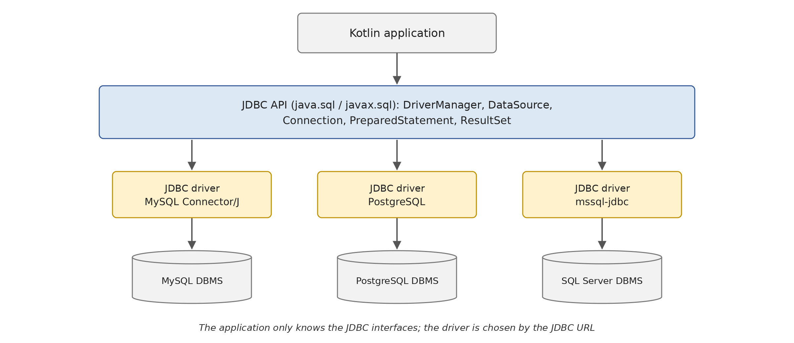
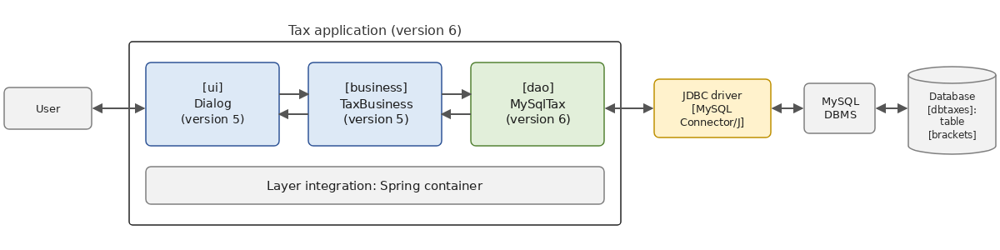

10. 使用 JDBC 访问数据库
10.1. JDBC 驱动程序
让我们回顾一下自第 6 章以来反复使用的分层架构。到目前为止，[Tax] 应用程序的 [dao] 层使用过三种数据源：
- 硬编码在代码中的数据（[HardwiredTax]）；
- 来自文本文件的数据（[FileTax]）；
- 来自 JSON 文件的数据（[JsonTax]）。
本章将研究数据来自数据库的情形。架构变为如下：

在上图中，[dao] 层通过一个特定于 [2] 所使用的 DBMS 的类库，与管理数据库 [4] 的 [1]（数据库管理系统）[3] 通信。该库实现了 Java 平台的一个标准 API 功能，即 JDBC （“Java DataBase Connectivity”），它自 1997 年的 1.1 版起就是 JDK 的一部分。它被称为 JDBC 驱动程序 （“JDBC driver”）。所有常见的 DBMS 都包含一个 JDBC 驱动程序，以 [.jar] 归档文件的形式分发。
Kotlin 没有自己的数据库访问 API：运行在 JVM 上的 Kotlin 程序直接使用 JDBC，就像它使用 JDK 的 NIO 文件或线程一样。这是该语言的主要优势之一：所有为 Java 编写的 JDBC 驱动程序——以及构建在它们之上的所有库——都可以不加修改地使用。正如我们在本章中将看到的，Kotlin 带来的是一种更简洁、更安全的编写 JDBC 代码的方式：用 [use] 函数关闭资源，用扩展函数读取结果，用数据类表示行，并且没有受检异常。
JDBC 首先是一组接口，定义在 JDK 的 [java.sql] 和 [javax.sql] 包中，这些包属于 [java.sql] 模块：[Connection]、[Statement]、[PreparedStatement]、[ResultSet]、[DataSource]……JDBC 驱动程序提供实现这些接口的类。而应用程序代码只与接口交互：它通常不包含驱动程序的类名。这与其他平台不同，后者的代码经常直接使用特定于每种 DBMS 的类（C# 中的 [MySqlConnection]、[SqlConnection]……）：在 JVM 上，抽象从一开始就是常态，正如我们将看到的，切换到另一种 DBMS 基本上就是更改驱动程序和数据库地址。尽管如此，每种 DBMS 都有自己的 SQL 方言：这种独立性是有限度的，我们也将对此进行研究。
我们只使用一种 DBMS，即 MySQL 8，附录“使用 Laragon 的 MySQL DBMS” 会在 Windows 上安装它，同时安装它的官方 JDBC 驱动程序，即 MySQL Connector/J，版本为 9.7.0。数据库由 SQL 脚本创建，这些脚本通过 [mysql] 命令行客户端运行；附录还展示了如何使用 Laragon 附带的 HeidiSQL 图形客户端来创建它们。
10.2. 使用数据源的两种方式
访问数据库有两种不同的方式：
- 连接模式；
- 离线模式。
在连接模式下，应用程序：
- 打开与数据源的连接；
- 以读/写模式操作数据源；
- 关闭连接。
在离线模式下，应用程序：
- 打开与数据源的连接；
- 把源中全部或部分数据的副本取回到内存中；
- 关闭连接；
- 使用内存中的数据副本工作，对其进行读写；
- 工作完成后，打开连接，把修改后的数据发送给数据源以便更新，然后关闭连接。
连接模式是 JDBC 的 [ResultSet] 接口的模式：查询结果的行是在连接打开期间读取的。离线模式则是 [CachedRowSet] 接口的模式，它位于 [javax.sql.rowset] 包中（Java 5）：这是一个内存中的表，由查询填充，离线修改，然后把它的更改发送回数据库。这些“RowSet”组件在 JDK 25 中仍然存在，但在新的应用程序中很少使用：使用数据的内存副本并在之后保存更改，如今由 ORM （“Object-Relational Mapper”，对象关系映射器）来处理，它操作的是普通对象而不是表的行。JVM 上使用最广泛的 ORM 是 Hibernate，它是第 11 章的主题；它既可以在 Kotlin 中使用，也可以在 Java 中使用。因此我们将主要关注连接模式——Hibernate 就是基于它的——而断开连接的模式只在本章末尾通过一个示例来演示。
10.3. 数据库操作的基本概念
10.3.1. 示例数据库
我们将以一个名为 [dbarticles] 的 MySQL 数据库来说明使用数据库的主要概念。它只包含一个表 [articles]，其中每一行描述商店里的一件商品：
- [ID]：商品的唯一标识符，即表的主键；
- [NAME]：商品的名称，同样是唯一的；
- [PRICE]：它的价格；
- [CURRENTSTOCK]：它的当前库存量；
- [MINIMUMSTOCK]：最低库存量，低于此量就必须补货。
数据库由以下 SQL 脚本创建：[sql/dbarticles.sql]：
- 第 5 行：该脚本是一个以 UTF-8 编码的文本文件。[SET NAMES utf8mb4] 向服务器指明这一点；否则，数据中任何带重音符号的字符（第 31–36 行）都可能被客户端 [mysql] 误解；
- 第 8–9 行：如果数据库存在就删除它，然后重新创建。因此该脚本可以多次运行，把数据库恢复到初始状态。[utf8mb4] 是 MySQL 的完整 Unicode 编码（MySQL 的旧编码 [utf8] 只能编码最多三个字节的字符）；
- 第 12 行：[dbarticles] 成为当前数据库：随后的 SQL 命令将在它上面执行；
- 第 15–27 行：表 [articles] 的定义：
- 第 16 行：列 [ID] 是表的主键（[PRIMARY KEY]）。MySQL 特有的属性 [AUTO_INCREMENT] 表示它的值在插入行时由 DBMS 自己生成：1、2、3……其他 DBMS 也有等价的概念，但语法不同（SQL Server 使用 [IDENTITY] ，PostgreSQL 和 Oracle 使用 [GENERATED … AS IDENTITY] ）；
- 第 18 行：价格是一个精确的十进制数，共 10 位数字，其中包含 2 位小数。避免对金额使用浮点类型，例如 [DOUBLE] （参见第 3 章中 [Double] 与 [BigDecimal] 的区别）。SQL 类型 [DECIMAL] 对应于类 [java.math.BigDecimal]，Kotlin 原样使用它；
- 第 22–26 行：完整性约束。[UNQ_NAME] 禁止两件商品同名；[CHECK] 约束禁止空名称、负数或零的价格，以及负的库存。在 8.0.16 版之前，MySQL 会默默地忽略 [CHECK] 约束；从那时起它就强制执行这些约束；
- 第 30–36 行：插入六行。[ID] 列没有被初始化：由 DBMS 为它赋值。
该脚本使用命令行客户端 [mysql]，在 [sql] 文件夹中运行（在附录的安装中，MySQL 的用户 [root] 没有密码；否则，请添加 [-p] 选项，客户端会提示输入密码）：
如果一切顺利，该命令不会显示任何内容。你可以使用同一个客户端检查表的结构和内容：
- 第 1 行：选项 [-t] 请求以表格形式显示；选项 [-e] 指定要执行的 SQL 命令，而选项 [--default-character-set=utf8mb4] 确保带重音符号的字符在 UTF-8 终端中正确显示；
- 第 3–9 行：表的结构，通过 MySQL 命令 [describe] 获得；
- 第 12–19 行：表的内容。[ID] 列中的值是由 DBMS 生成的。
关于区分大小写的说明：列名始终不区分大小写（[name] 和 [NAME] 指的是同一列），但表名是服务器上的文件名。它们在 Windows 上不区分大小写，而在 Linux 上区分大小写。为了确保示例在任何地方都能运行，该表被命名为 [articles]，使用小写，查询中也这样书写。
本章的程序会修改表 [articles]。这里显示的结果是在每个程序运行之前重新运行脚本 [dbarticles.sql] 得到的；希望精确重现相同结果的读者应当这样做。
现在我们有了数据库，就可以使用它了。在此之前，让我们先回顾一下关于 SQL 的几点。
10.3.2. SQL 语言的四个基本命令
SQL（“Structured Query Language”，结构化查询语言）是一种部分标准化的、用于查询和更新数据库的语言。所有 DBMS 的方言都遵循 SQL 的标准化部分，但会添加专有的语言扩展，以利用它们各自的特性。我们已经遇到了两个例子：主键的自动生成，以及表列允许的数据类型，往往取决于 DBMS。
我们在这里介绍的 SQL 语言的四个基本命令是标准化的，所有 DBMS 都接受：
命令 | 作用 |
[select col1, col2, … from table1, table2, … where condition order by expression] | 用于从数据库中检索数据的查询。只有关键字 [select] 和 [from] 是必需的。对关键字 [from] 之后的所有表进行连接；只保留关键字 [select] 之后的列；只保留满足关键字 [where] 条件的行；所得的行按关键字 [order by] 中的表达式排序，构成查询的结果。这个结果是一个表。 |
[insert into table(col1, col2, …) values (val1, val2, …)] | 向 [table] 插入一行。[(col1, col2, …)] 指定该行中要用值 [(val1, val2, …)] 初始化的列。 |
[update table set col1=val1, col2=val2, … where condition] | 根据 [table] 中的 [condition] 更新行（如果没有 [where]，则更新所有行）。对于这些行，[coli] 列被设置为 [vali]。 |
[delete from table where condition] | 删除 [table] 中所有符合 [condition] 的行（如果没有 [where]，则删除所有行）。 |
我们将编写一个控制台应用程序，对 [dbarticles] 数据库发出 SQL 命令。下面是该程序运行的一个示例（通过键盘输入的 SQL 命令出现在提示符“SQL query”之后；在本文档中，它们是通过标准输入重定向提供给程序的，然后被重新插入到它们所响应的提示符之后）；鼓励读者理解所发出的 SQL 命令及其结果：
- 第 2 行：数据库的 URL 和 JDBC 用户：这些是用于连接数据库的参数；
- 第 4 行：取回 [articles] 表的内容；
- 第 17 行：插入一个新行。请注意，在此操作中 [id] 列没有被初始化，因为 DBMS 会生成它的值；
- 第 20 行：验证。第 32 行：该行确实已被添加，其 [id] 为 7。使用 [select *] 时，列名就是表中的列名，为大写；
- 第 34 行：我们把刚刚添加的商品的价格提高 10%；
- 第 43 行：价格确实上涨了；
- 第 45 行：刚才添加的商品被删除；
- 第 48 行：验证只剩下六件商品；
- 第 56 行：该程序只接受 [select]、[insert]、[update], 和 [delete] 这四个命令；
- 第 60 行：DBMS 报告的错误：表 [article] 不存在；
- 第 63 行：唯一性约束 [UNQ_NAME] 阻止添加第二件 [bike] 商品。MySQL 的错误消息与驱动程序的一样，都是英文的。
10.3.3. JDBC 用于连接模式的基本接口
让我们回到应用程序通过 JDBC 驱动程序访问数据库的示意图：
在连接模式下，应用程序：
- 打开与数据源的连接；
- 以读/写模式操作数据源；
- 关闭连接。
这些操作主要涉及三类对象：
- 连接 （[Connection]），它封装了数据库连接的属性和方法；
- SQL 命令 （[Statement]，对于带参数的命令则为 [PreparedStatement] ），它封装了所执行的 SQL 命令的属性和方法；
- 结果 （[ResultSet]），它封装了 SQL [select] 命令的结果的属性和方法。
这些是 [java.sql] 包中的接口。MySQL 驱动程序使用它自己包中的类来实现它们（[com.mysql.cj.jdbc.ConnectionImpl]、[ClientPreparedStatement]、[ResultSetImpl]……），应用程序不需要了解它们：它通过返回接口的方法获得它的对象。连接从 [DriverManager] 类（或从我们稍后将讨论的 [DataSource] 数据源）获得，SQL 命令由连接创建，结果由 SQL 命令返回。
这些接口是 Java 接口。Kotlin 按照其访问 Java 代码的标准规则使用它们：一对访问器 [getXxx] / [setXxx] 被用作 属性 [xxx]（[result.metaData] 而不是 [result.getMetaData()]，[connection.autoCommit = false] 而不是 [connection.setAutoCommit(false)]），并且 Java 方法返回的值具有平台类型 （在编译器消息中表示为 [String!] ）：Kotlin 不知道它们是否可以为 [null] ，而是由开发者自行选择把它们当作 [String] 还是 [String?] （第 3 章）。我们将看到，这对于可能包含 SQL 值 [NULL] 的列很重要。
10.3.3.1. Connection 接口
它用于管理与数据库的连接。连接通过静态方法 [DriverManager.getConnection(url, user, password)] 获得，该方法接受数据库的 URL 和 JDBC——例如 [jdbc:mysql://localhost:3306/dbarticles]——以及用户的凭据。返回的连接已经是打开的。我们将使用的 [Connection] 接口的方法如下：
方法 | 作用 |
[createStatement] | 创建一个与此连接关联的 SQL 命令。 |
[prepareStatement] | [prepareStatement(sql)] 创建一个与此连接关联、配置为 [PreparedStatement] 的 SQL 命令。 |
[prepareCall] | [prepareCall("{call name(?, ?)}")] 创建一个执行数据库中存储过程的 [CallableStatement] 命令。 |
[autoCommit] | [autoCommit = false] （Java 方法 [setAutoCommit]）开始一个事务（见下文）。 |
[commit]、[rollback] | 提交并回滚当前事务。 |
[metaData] | （Java 方法 [getMetaData]）返回一个描述 DBMS 和驱动程序的 [DatabaseMetaData] 对象。 |
[isValid] | [isValid(seconds)] 验证连接是否仍然可用。 |
[close] | 关闭连接，以及由它产生的 SQL 命令和结果。 |
打开连接的形式如下（本段中的代码片段取自项目的 [models/Models.kt] 文件，该文件可以编译但不执行）：
类型推断把类型 [Connection!] 赋给 [connection]：这是一个无需空检查即可使用的连接（[getConnection] 从不返回 [null]：如果失败，它会抛出异常）。
10.3.3.2. Statement 接口
它用于执行 SQL 命令。我们将使用的该接口的方法如下：
方法 | 作用 |
[executeQuery] | [executeQuery(sql)] 执行 SQL [select] 命令。它返回一个 [ResultSet] 对象，表示 [select] 的结果。 |
[executeUpdate] | [executeUpdate(sql)] 执行 SQL 命令 [update]、[insert]、[delete]（或诸如 [create table] 之类的定义命令）。它返回该操作所影响的行数（更新、插入、删除）。[executeLargeUpdate] （Java 8）以 [Long] 的形式返回这个数字。 |
[execute] | [execute(sql)] 执行任意 SQL 命令。返回 [true] 表示命令产生了 [ResultSet]，随后通过属性 [resultSet] 获得它；返回 [false] 表示产生的是行数，该行数通过属性 [updateCount] 获得。 |
[addBatch]、[executeBatch] | 向批处理中添加一个作业并执行该批处理（见下文）。 |
[generatedKeys] | （Java 方法 [getGeneratedKeys]）返回 DBMS 在 [insert] 期间生成的主键。 |
[queryTimeout] | [queryTimeout = seconds] 设置该命令的最长执行时间。 |
[close] | 关闭 SQL 命令，以及它的 [ResultSet]。 |
[PreparedStatement] 接口派生自 [Statement]：它是一个带参数的 SQL 命令，其文本在创建时设定，其参数通过 [setXxx] 方法赋值。我们将在“参数化查询”一节中研究它。不带事务的 SQL 命令的执行形式如下：
10.3.3.3. ResultSet 接口
它封装了 SQL [select] 命令的结果。[ResultSet] 对象表示一个有行和列的表，它被顺序处理：先是第一行，然后是第二行，依此类推，不能回退（这是默认类型 [TYPE_FORWARD_ONLY]；JDBC 也支持可双向遍历的结果，但这很少使用）。[ResultSet] 有一个游标 ，初始位置在第一行之前：必须调用 [next] 才能读取第一行。我们将使用的该接口的方法如下：
方法 | 作用 |
[next] | 移动到结果表中的下一行。如果成功读取了该行，则返回 [true] ，如果没有更多的行，则返回 [false] 。 |
[getInt] | [getInt(i)] 返回当前行中第 i 列的整数值。列的编号从 1 开始，而不是 0。[getInt("name")] 返回名为 [name] 的列的值。其他类似的方法包括 [getBoolean]、[getBigDecimal]、[getDouble]、[getLong]、[getString]……由于它们带有参数，Kotlin 不会把它们转换为属性。 |
[getObject] | [getObject(i)] 以 [Any] （即 Java 的 [Object]）形式返回第 i 列的值，类型由驱动程序选择；[getObject(i, LocalDate::class.java)] 以所请求的类型返回它（在 Kotlin 中，[X::class.java] 指的是类 X 的 Java [Class] 对象，即 Java 的 [X.class]）。 |
[wasNull] | 返回 [true] 表示最后读取的列没有值，即用 SQL 值 [NULL] 表示的情形。返回对象的方法（[getString]、[getBigDecimal]、[getObject]……）此时返回 [null]；返回基本类型的方法（[getInt]、[getDouble]……）返回 0：只有 [wasNull] 才能让我们区分 0 和 [NULL]。 |
[metaData] | （Java 方法 [getMetaData]）返回一个描述结果中各列的 [ResultSetMetaData] 对象：[columnCount] （列数）、[getColumnLabel(i)] （第 i 列的名称）、[getColumnTypeName(i)] （其 SQL 类型）…… |
[close] | 关闭结果。 |
对 [ResultSet] 对象的处理通常如下所示：
循环 [while (result.next())] 与 Java 中相同：我们将看到，在 Kotlin 中，它被一劳永逸地写在一个扩展函数里，而不必在每个读取结果的函数中重复。
这里需要特别说明一下平台类型。对于接受 SQL 值 [NULL] 的列，调用 [getString(i)]，[null] 会被返回；如果你写 [val name: String = result.getString(2)]，Kotlin 会插入一个检查，并在赋值发生时立即抛出 [NullPointerException] 错误 ，消息为“getString(...) must not be null.”。因此，必须把可能为 *[NULL]* 的列值声明为 [String?]***，然后使用第 3 章中的 ***[?.] 和 ***[?:]* 运算符来处理它们。在我们的表中，所有列都是 [NOT NULL]：不会出现这个问题。
使用 MySQL Connector/J 时，默认情况下，结果行会在查询执行后立即全部从服务器传输到应用程序的内存中；[next] 随后遍历它们。对于有几百万行的结果集，可以指示驱动程序在读取时才接收它们（URL 上使用参数 [useCursorFetch=true] ，SQL 命令上使用 [fetchSize = n] ）：这是特定于驱动程序的设置，我们不会使用它。
10.3.4. 错误处理
[dao] 层在操作数据库时可能遇到许多错误：服务器宕机、数据库不存在、密码错误、SQL 语法错误、违反完整性约束等等。这些错误以 [SQLException] 异常的形式报告。在 Java 中，[SQLException] 是一个受检异常：JDBC 中的所有方法都在它们的 [throws] 子句中声明它，而 Java 编译器要求调用它们的代码要么捕获它，要么再次声明它。Kotlin 没有受检异常 （第 3 章）：编译器不施加任何限制，调用 JDBC 的 Kotlin 函数不需要声明任何东西。这既是自由，也是责任：没有任何东西提醒开发者某一行可能失败；由开发者自己决定在哪里处理错误。[dao] 层必须处理这些错误，并且无论发生什么，都要释放它所获取的资源：连接、SQL 命令和结果都必须被关闭。使用 [finally] 子句编写——就像 Java 7 之前在 Java 中所做的那样——上面展示的处理 [select] 命令结果的代码就变成如下形式：
这段代码很繁琐：连接必须在 [var] 中声明，类型为 [Connection?]，并且要放在 [try] 之前，才能在 [finally] 子句中可见，而且关闭连接本身也可能触发 [SQLException] （第 23 行），这个异常必须在 [finally] 子句中被拦截。请注意对 [connection?.close()] 的安全调用：如果连接无法打开，[connection] 的值为 [null] ，什么也不会做。
第 3 章介绍了 Kotlin 的解决方案：use 扩展函数，它为任何 *[AutoCloseable] 对象定义，执行传给它的代码块（lambda），并在退出代码块时关闭该对象，无论以何种方式退出代码块。这相当于 Java 的 try-with-resources 语句。对象 *[Connection]*、*[Statement]、和 *[ResultSet] 实现了 *[AutoCloseable] 接口：
- 第 3–5 行：打开了三个资源，每个都由一个
*[use]打开。被打开的对象就是 lambda 参数（[connection]、[statement]、[result]）；我们给它起一个名字，而不使用 [it]，因为这三个 lambda 是嵌套的，[it] 会指向最内层 [use] 的对象。与 Java 的try-with-resources可以在括号中接受多个资源不同，*[use]只处理一个资源：因此，我们嵌套使用[use]。资源按与打开顺序相反的顺序关闭：先是结果，然后是 SQL 命令，最后是连接。关闭操作抛出的异常不会清除可能导致代码块退出的那个异常：它作为“被抑制的”异常附加到后者上（[suppressedExceptions]），与 Java 中一样； - 第 13 行：[catch] 子句既拦截连接和执行错误，也拦截关闭时的错误。
由于 [use] 是一个 [inline] 函数（第 7 章），它的代码块不是一个 lambda 对象：它被复制到调用的位置，写在代码块内的 [return] 语句会在资源被关闭之后终止外围函数。此外，[use] 返回其代码块的值：[val n = connection.createStatement().use { it.executeUpdate(sql) }] 执行命令，关闭 [Statement] 对象，并返回被修改的行数。我们会经常利用这两个特性。
使用 [use] 的好处不仅仅是节省几行代码：它使开发者不必手动关闭连接。然而，忘记关闭连接可能不会被注意到，并导致应用程序在 DBMS（或我们稍后将介绍的连接池）达到其所能支持的最大打开连接数时，以看似随机的方式“崩溃”。在本课程的其余部分，每个 JDBC 资源都使用 use 语句打开。
[SQLException] 类提供关于错误的三项信息，Kotlin 将它们呈现为属性：
- [message]：错误消息；
- [errorCode]：特定于 DBMS 的错误代码（MySQL 的错误号：1049、1062……）；
- [sqlState]：由 SQL 标准定义的五个字符的错误代码（“SQLSTATE”），对于最常见的错误，所有 DBMS 都通用：类 [42] 表示语法或访问错误，[23] 表示违反完整性约束，[08] 表示连接错误……
请注意属性 [sqlState]，它派生自 Java 方法 [getSQLState]：当名称以多个大写字母开头时，Kotlin 会把它们转换为小写，但如果最后一个字母开始了下一个单词则除外（[SQLState] 变成 [sqlState]）。自 Java 6（JDBC 4.0）起，[SQLException] 还有标准的派生类，驱动程序会根据错误的性质来抛出它们。主要的派生类如下：
类 | 错误 |
[SQLSyntaxErrorException] | SQL 语法错误、表或数据库不存在、权限不足（SQLSTATE，类 42） |
[SQLIntegrityConstraintViolationException] | 违反完整性约束：重复键、外键、列 [NOT NULL] （SQLSTATE，类 23） |
[SQLDataException] | 无效数据：值过大、无法转换（SQLSTATE，类 22） |
[SQLTimeoutException] | 超时（[queryTimeout]） |
[SQLTransactionRollbackException] | 事务被 DBMS 回滚，例如由于死锁 |
[SQLNonTransientConnectionException]、[SQLRecoverableException] | 连接问题 |
程序 [Jdbc02.kt] 引发各种错误并显示它们：
结果：
说明：
- 第 10–12 行：数据库连接参数，在程序顶部定义为名为 [const val] 的顶层常量，它们对该文件是私有的；
- 第 15 行：MySQL 的错误号“Duplicate entry”，按 MySQL 文档中的命名；
- 第 19–27 行：六个失败的操作：数据库不存在；服务器不可达（没有 MySQL 服务器在端口 3399 上监听，这产生的错误与服务器已停止时相同）；语法错误；表不存在；商品名称重复；价格为负。第 20 行 URL 的 [connectTimeout=5000] 参数把连接等待时间限制为 5 秒（5000 毫秒）；
- 第 31 行：函数 [execute] 执行 SQL 命令 [query] ，作用于由 URL [url] 指定的数据库；
- 第 34–35 行：连接和 SQL 命令由两个嵌套的 [use] 命令打开。第二个可以写在一行上：lambda [{ statement -> statement.execute(query) }] 只有一条指令；
- 第 35 行：方法 [execute] 执行任意 SQL 命令：[select] 或 [insert]。如果它抛出异常，第 37 行的“no error”消息就不会出现；
- 第 39 行：对异常使用 [when] ，带有 [is Type] 子句（第 3 章）；
- 第 41 行：守卫（[if]，Kotlin 2.2）允许单独处理某个特定错误：违反完整性约束（[SQLIntegrityConstraintViolationException]）且 MySQL 代码等于 1062，即重复键。这相当于 Java 21 的 [switch] 中带守卫的模式 [case … when …]。在这种情况下，应用程序会显示一条用户能够理解的消息；
- 第 44–46 行：其他错误。显示异常类（[ex.javaClass.simpleName]：[javaClass] 返回 Java 的 [Class] 对象）、MySQL 错误代码和 SQLSTATE 代码，随后是消息的第一行：有些驱动程序消息跨越多行。属性 [message] 的类型是 [String?] （异常可能没有消息）：使用安全调用来处理它，[?.lineSequence()?.first()]；[lineSequence] 把字符串拆分为行序列，由 [first] 取其第一行。如果消息为 [null]，表达式的值就是 [null] ，模板会显示“null”。
结果显示 MySQL 驱动程序使用标准类：[SQLSyntaxErrorException] 用于不存在的数据库（1049）、语法错误（1064）或不存在的表（1146），它们的 SQLSTATE 都是以 [42xxx] 开头的。不可达的服务器会产生 [CommunicationsException]，这是一个驱动程序类（派生自 [SQLRecoverableException]）：没有 MySQL 错误代码，因为服务器没有响应，但 SQLSTATE [08S01] 表示连接失败。违反 [CHECK] 约束（错误 3819）只是一个 [SQLException]，其 SQLSTATE 为 [HY000] （“一般错误”）：MySQL 没有给它分配类 23 的 SQLSTATE。因此，不能完全依赖派生类：错误代码和 SQLSTATE 仍然有用。
希望保持独立于 DBMS 的 [dao] 层只使用标准类和 SQLSTATE；错误代码（[errorCode]）是特定于每种 DBMS 的。
关于受检异常的最后一点说明。抛出 [SQLException] 的 Kotlin 函数不会在任何地方声明它；如果它要被 Java 代码调用，Java 代码将无法使用 [catch (SQLException e)] 捕获该异常，当被调用的方法都没有声明它时，Java 编译器会拒绝这种写法。因此我们给 Kotlin 函数添加 [@Throws(SQLException::class)] 注解，它会生成 Java 所期望的 [throws] 子句。我们完全用 Kotlin 编写的程序不需要这样做。
10.3.5. 配置示例项目
MySQL 的 JDBC 驱动程序是发布在 Maven Central 上的一个库，Maven Central 是 Gradle 获取依赖项的库仓库（第 2 章）。本章的 [10-jdbc] 文件夹是一个多项目 Gradle 构建（第 2 章）：本章的程序构成 [jdbc] 子项目，而本章末尾介绍的 [Tax] 第 6 版应用程序则由另外两个子项目组成：
本章的 [settings.gradle.kts] 文件声明了这些子项目：
- 第 3–6 行：该插件允许 Gradle 在机器上找不到 JDK 时自行下载它（第 2 章）；
- 第 11 行：[jdbc] 子项目，其文件夹同名；
- 第 13–16 行：[Tax] 应用程序的第 6 版，在本章末尾介绍。
子项目 [jdbc] 的文件 [build.gradle.kts] 如下：
- 第 2–5 行：用于 JVM 的 Kotlin 插件，其版本由根项目设置（第 2 章），以及 [application] 插件，它提供 [run] 任务；
- 第 15–23 行：项目的四个库，由 Gradle 在第一次构建时从 Maven Central 下载：
- 第 17 行：MySQL 的 JDBC 驱动程序，MySQL Connector/J，坐标为 [com.mysql:mysql-connector-j]。直到 8.0.30 版，它都以坐标 [mysql:mysql-connector-java] 发布，这个坐标在许多项目中仍然可以找到。只使用 JDBC 接口的程序仅在运行时才需要驱动程序：因此用 [runtimeOnly] 声明它，这确保代码中不会误用任何驱动程序类。我们用 [implementation] 声明它，因为程序 [Jdbc03] 为了演示而使用了驱动程序中的一个类，即 [MysqlDataSource]；
- 第 18 行：连接池 HikariCP，我们将在程序 [Jdbc03] 中使用它；
- 第 21 行：HikariCP 通过 SLF4J API（“Simple Logging Facade for Java”）写它的日志消息，这需要一个实现：我们使用 Logback，它只在运行时需要（[runtimeOnly]）。没有它，SLF4J 会在启动时显示警告。下面显示的文件 [src/main/resources/logback.xml] 只显示警告和错误；
- 第 23 行：协程库 kotlinx-coroutines（第 9 章），由在协程中执行 JDBC 请求的程序 [Jdbc08Coroutines] 使用；
- 第 27–33 行：编译器，配置与课程中的所有项目相同：JDK 25，把警告当作错误处理，在编译后的类中保留参数名称；
- 第 38–40 行：由 [gradlew run] 执行的程序由属性 [main] 指定；默认情况下，它是 [jdbc01.Jdbc01Kt]；
- 第 43–45 行：被执行的程序可以从键盘读取，这是 [Jdbc01] 所需要的；
- 第 48–51 行：由 Gradle 启动的程序以 UTF-8 写入其输出，以便带重音符号的字符在 Windows 上正确显示（第 2 章）。
Logback 配置文件如下：
- 第 4–8 行：消息以“类 级别 - 消息”的格式写到控制台；
- 第 9 行：只显示级别为 [WARN] （警告）或 [ERROR] 的消息。如果级别为 [INFO]，你会看到 HikariCP 池的启动和关闭消息。
MySQL 有两个常用的 JDBC 驱动程序：
- [com.mysql:mysql-connector-j] （“Connector/J”），由 MySQL 的所有者 Oracle 发布，采用带例外条款（“Universal FOSS Exception”）的 GPL v2 许可证，允许它与以其他自由许可证分发的软件一起使用；其他所有情况由商业许可证覆盖。这是官方驱动程序，也是我们所使用的；
- [org.mariadb.jdbc:mariadb-java-client]，MariaDB（MySQL 的一个自由变体）的驱动程序，采用 LGPL 许可证，它也适用于 MySQL。
两个驱动程序实现相同的 JDBC 接口：从一个切换到另一个只需要更改 [build.gradle.kts] 中的依赖项以及 URL 的开头（[jdbc:mariadb:] 代替 [jdbc:mysql:]）。
一点历史说明：直到 Java 5，在打开连接之前必须先加载驱动程序类，使用类似 [Class.forName("com.mysql.jdbc.Driver")] 的语句，这在互联网上的许多示例中仍然可以看到。自 Java 6（JDBC 4.0）起，这不再必要：每个驱动程序归档都在 [META-INF/services/java.sql.Driver] 文件中声明它的类，而 [DriverManager] 通过服务机制（[ServiceLoader]）自动加载类路径中存在的所有驱动程序。
在实际的应用程序中，不应该把连接参数硬编码：它们取决于应用程序所安装的机器。本章的第一个程序从属性文件（第 6 章）[dbarticles.properties] 中读取它们，该文件位于子项目文件夹中：
- 第 2 行：数据库的 JDBC URL。JDBC URL 的形式为 [jdbc:subprotocol:details]。子协议标识驱动程序（[mysql]），而细节——其格式取决于驱动程序——标识数据库。对于 MySQL，它们是：
- [//localhost]：MySQL DBMS 所在机器的名称——此处是 [localhost]——也就是运行该程序的机器；
- [:3306]：MySQL 服务器监听连接的端口；默认是 3306；
- [/dbarticles]：数据库名称；
- 可选的驱动程序参数可以跟在问号之后，形式为 [?param1=value1¶m2=value2]。我们将遇到 [connectTimeout]、[rewriteBatchedStatements]、和 [allowMultiQueries]；
- 第 3 行：MySQL 用户——此处是 [root]——DBMS 的管理员；
- 第 4 行：他的密码，这里留空。
Connector/J 文档提供了 URL 参数的完整列表：Connector/J Configuration Properties。
本章的其他程序更短，它们把连接参数存放在程序顶部的常量中，例如 [Jdbc02.kt]：这对示例来说更简单，但在实际的应用程序中不应这样做。
要运行这些程序，请进入 [10-jdbc] 文件夹并键入：
第一条命令运行 [Jdbc01]，第二条运行 [Jdbc02]。前缀 [:jdbc:] 指的是任务 [run] ，它位于子项目 [jdbc] 中；任务 [run] 在子项目文件夹 [10-jdbc/jdbc] 中运行，文件 [dbarticles.properties] 就位于那里。[-q] 选项（“quiet”）会抑制 Gradle 消息：只剩下程序的输出。当然，你也可以在 IntelliJ IDEA 中通过点击 [main] 函数旁边的绿色三角形来运行这些程序（在这种情况下，你需要在运行配置中检查当前目录）。在下文中，我们将只重现程序的输出。
10.3.6. 示例程序
我们已经看过其执行示例的程序 [Jdbc01.kt]，如下（主程序）：
- 第 5–8 行：所使用的 JDBC 接口和类，全部来自 [java.sql] 包。程序中不包含 MySQL 驱动程序的任何类名：只有从配置中读取的 URL 和 JDBC 用户提到了 MySQL；
- 第 16 行：四个被接受的 SQL 命令，放在由 [setOf] （第 5 章）创建的只读集合中；
- 第 19–21 行：三个连接参数被合并为一个数据类。我们不像课程中的 Java 程序那样向每个函数传递三个字符串，而是传递一个 [ConnectionParameters] 对象，它知道如何打开连接：它的 [connect] 方法使用它自己的属性调用 [DriverManager.getConnection] 。返回类型 [Connection] 是显式指定的：否则，该函数将返回平台类型 [Connection!]；
- 第 25–29 行：读取属性文件，如第 6 章所述。[bufferedReader] 扩展函数（属于 [kotlin.io.path] ）以 UTF-8 打开文件，而 [use] 关闭它。[getProperty] 返回某个键的值，如果键缺失则返回 [null] ：它的 Kotlin 类型是 [String?]。由于 URL 是必需的，当它缺失时，Elvis 运算符 [?:] 会抛出 [IOException] ，这使得文件不存在和文件不完整两种情况可以用同样的方式处理；对于另外两个参数，[getProperty(key, default)] 返回一个默认值；
- 第 32 行：顶层函数 [main]，没有参数，因为程序不使用它的实参；
- 第 34–38 行：[try] 是一个表达式（第 3 章）：如果一切顺利，它的值就是 [try] 块的值；如果出错，[catch] 子句会显示一条消息，并使用 [return] 终止程序。文件是在当前文件夹中查找的，也就是启动程序的文件夹：当你键入 [gradlew :jdbc:run] 时，它就是子项目文件夹；
- 第 45 行：循环，用于输入在键盘上键入的 SQL 命令并在数据库上执行它们；
- 第 47–48 行：[print] 显示提示符而不换行，然后 [readlnOrNull] 读取在键盘上键入的一行；如果标准输入已关闭，它返回 [null] 。安全调用 [?.trim()] 后接 [orEmpty] 把这个 [null] 转换为空字符串，从而在下一行停止循环；
- 第 52 行：查询的第一个单词，通过按空格拆分查询得到（正则表达式 [\s+]，第 5 章）。它被转换为小写以便比较，但查询本身不会被修改：把整个查询转换为小写会导致无法插入名为“Bike”的商品；
- 第 53–55 行：如果查询无效，就显示一条错误消息，程序转到下一个查询。运算符 [!in] 调用集合的 [contains] 方法（第 4 章）；
- 第 58–61 行：执行 SQL 命令。它的形式取决于它是 [select] 命令，还是 [insert]、[update] 或 [delete] 命令：在第一种情况下，命令从数据库中检索数据而不修改它；在第二种情况下，它更新数据库而不检索任何数据。在这两种情况下，执行都委托给一个接收连接参数和要执行的 SQL 命令的函数。
请注意这里没有任何异常声明：在 Java 中，读取文件需要拦截或声明 [IOException] 异常。在 Kotlin 中，这是一种选择：我们在这里捕获 [IOException] ，因为这里是我们知道该如何处理该错误的地方（通知用户并停止）。
10.3.7. 执行 SELECT 请求
执行 SQL 命令包括以下步骤：
- 连接到数据库；
- 向数据库发送 SQL 命令；
- 处理 SQL 命令的结果；
- 关闭连接。
第 2 步和第 3 步可以重复；连接只在数据库处理结束时才关闭。打开的连接在 DBMS 中是有限的资源：必须节约使用，我们总是努力缩短打开的连接的生存期。在我们的程序中，连接在每个 SQL 命令之后关闭，并为下一个命令打开新的连接。
然而，打开连接的代价很高：它需要与服务器建立网络连接，可能还要协商加密并进行身份验证。[DriverManager] 对降低这一代价没有任何作用：每次调用 [getConnection] 都会打开一个新的网络连接，而每个 [close] 都会真正关闭它。对于这样的交互式工具，这不成问题。执行大量 SQL 命令的应用程序——例如 Web 服务器——则改用连接池：当应用程序关闭连接时，连接池并不会真的关闭它，而是把它归还给池；当应用程序请求新连接时，它会收到池中一个已经建立的连接。这一机制的优点是它对开发者是透明的：使用 [use] 打开和关闭连接的代码无需修改。我们将在“数据源与连接池”一节中看到如何使用它。因此，在每个操作开始时打开连接并在结束时关闭它是最佳实践。
首先，我们关注 SQL 命令 [select] 的执行。我们示例程序中的函数 [executeSelect] 及其所使用的函数 [displayResultSet] 如下：
- 第 2 行：该函数接收连接参数和要执行的 SQL 命令 [select] [query] 。与程序的另外两个函数一样，它被声明为 [private]：它只在文件 [Jdbc01.kt] 中可见；
- 第 5–7 行：三个嵌套的 [use] 语句 打开三个资源：
- 第 5 行：与数据库的连接，通过 [connect] 方法从 [DriverManager] 获得。[DriverManager] 查询类路径中的每个驱动程序：第一个识别该 URL 的驱动程序打开连接。连接参数就是在这时使用的，连接错误也是在这时发生的。连接的类型是由 [Connection] 接口定义的类型：代码并不知道它是 MySQL 驱动程序的对象；
- 第 6 行：SQL 命令，由连接创建的 [Statement] 对象。同一种类型的对象既用来执行 [select] 命令，也用来执行 [update]、[insert] 和 [delete] 命令；
- 第 7 行：[select] 命令由 [executeQuery] 方法执行，它返回一个 [ResultSet] 对象；
- 第 9 行：函数 [displayResultSet] 负责显示结果；
- 第 13–14 行：任何数据库操作都可能触发 [SQLException]。在这里这更有可能发生，因为用户输入的 SQL 命令可能包含语法错误。我们需要能够告知用户这一点：异常被捕获，其消息被显示出来。在 [catch] 子句执行时——无论异常源于连接、执行还是行的读取——[use] 命令都已经关闭了结果集、SQL 命令和连接；
- 第 19 行：该函数接收一个 [ResultSet] 对象。它的方法可能抛出 [SQLException]；在 Java 中，相应的方法必须用 [throws SQLException] 声明它。在 Kotlin 中，不需要任何声明：异常会直接传播给调用它的函数，由后者捕获；
- 第 21–25 行：显示 [select] 结果表的列名。它们就是 [coli] 列，来自查询 [select col1, col2, … from table …]。它们由结果的元数据提供，这是一个 [ResultSetMetaData] 对象，通过 [metaData] 属性获得：[columnCount] 提供列数，而 [getColumnLabel(i)] 提供第 i 列的名称，如果查询指定了别名，则提供其别名（[select count(*) as total …]）。由于列的编号从 1 开始，因此构造范围 [1..metadata.columnCount] （第 22 行），然后 [joinToString] （第 5 章）把每个编号转换为名称，并把这些名称用逗号分隔后连接起来。与 Java 版本不同，不需要任何中间数组。["-".repeat(n)] 生成由 n 个短划线组成的字符串；
- 第 27–28 行：我们遍历结果表，并显示每一行的值，值之间用空格分隔，使用同一个区间 [columns] 和同一个函数 [joinToString]；
- 第 28 行：结果中第 i 列的类型是未知的，因为用户输入的查询是未知的。因此，我们不能使用语法 [result.getXxx(i)]，其中 [Xxx] 是列的类型。相反，我们使用 [getObject(i)]，它以 [Any!] 的形式返回值；模板 ["${result.getObject(it)}"] 使用它的 [toString] 方法把它转换为字符串（对于 SQL 值 [NULL]，则显示“null”）。对于列 [price]，它的 SQL 类型是 [DECIMAL(10,2)]，对象是一个带两位小数的 [BigDecimal] ，它的 [toString] 方法以小数点显示它（[500.00]）：与 [String.format] 不同，[toString] 不依赖于工作站的语言。“法式”显示则要使用 ["%.2f".format(price)] 或类 [NumberFormat] （第 5 章）。
10.3.8. 执行更新请求：INSERT、UPDATE、DELETE
函数 [executeUpdate] 的代码如下：
更新命令的执行与 [select] 命令的执行区别仅在于 SQL 命令所使用的方法：[executeQuery] 用于 [select]，[executeUpdate] 用于 [update]、[insert]、[delete]：
- 第 4–5 行：这一次只有两个资源：连接和 SQL 命令；
- 第 7 行：[update]、[insert]、或 [delete] 命令由 [executeUpdate] 方法执行。如果成功，该方法返回被更新（[update]）、被插入（[insert]）或被删除（[delete]）的行数；
- 第 9 行：显示这个行数。
建议读者回顾“SQL 语言的四个基本命令”一节中给出的执行示例。
10.4. JDBC 与对 DBMS 的独立性
10.4.1. 当前的 JDBC 驱动程序
我们研究过的代码不包含 MySQL 驱动程序的任何类名：它只使用 [java.sql] 的接口。要让它适用于另一种 DBMS，原则上只需把该 DBMS 的驱动程序添加到项目中，并更改 JDBC URL。以下是当今主要的 JDBC 驱动程序，全部发布在 Maven Central 上：
DBMS | Gradle 依赖项 | JDBC URL | 说明 |
MySQL | [com.mysql:mysql-connector-j] | [jdbc:mysql://host:3306/database] | 本课程使用的官方驱动程序 |
MariaDB、MySQL | [org.mariadb.jdbc:mariadb-java-client] | [jdbc:mariadb://host:3306/database] | |
PostgreSQL | [org.postgresql:postgresql] | [jdbc:postgresql://host:5432/database] | |
SQL Server、Azure SQL | [com.microsoft.sqlserver:mssql-jdbc] | [jdbc:sqlserver://host:1433;databaseName=database] | Microsoft 驱动程序 |
Oracle | [com.oracle.database.jdbc:ojdbc11] | [jdbc:oracle:thin:@//host:1521/service] | |
H2 | [com.h2database:h2] | [jdbc:h2:mem:database] 或 [jdbc:h2:./file] | 一个用 Java 编写、嵌入在应用程序中的 DBMS：内存数据库或基于文件的数据库，无需服务器；广泛用于测试 |
SQLite | [org.xerial:sqlite-jdbc] | [jdbc:sqlite:file.db] | 存放在文件中的数据库，无需服务器 |
请注意，[jdbc:] 之后的 URL 格式是特定于每个驱动程序的。
其结构如下：

应用程序只认识 JDBC 的接口。具体的对象由驱动程序创建，驱动程序由 [DriverManager] 根据 URL 选择：类路径中存在的每个驱动程序都声明它的主类，即 [java.sql.Driver] 接口的一个实现，如果 URL 不是为它准备的，它的 [connect(url, properties)] 方法就返回 [null] （[acceptsURL(url)] 也允许你对此提出查询）。程序 [Jdbc03.kt] 演示了这一点。它接收数据库的 JDBC URL 作为实参：
使用 MySQL 的 URL（默认值）的结果：
使用名为 PostgreSQL 的数据库的 URL（其驱动程序不在类路径中）的结果：
这里我们讨论程序的第一部分（直到第 36 行的 [main] 函数，以及 [displayArticles] 函数）；第二部分将在下一节中介绍：
- 第 17 行：数据库的 JDBC URL，作为实参传入；否则，使用默认的 MySQL 数据库 [dbarticles]。[firstOrNull] 返回实参数组的第一个元素，如果数组为空则返回 [null] ；随后 Elvis 运算符 [?:] 用默认 URL 替换 [null] 。使用 Gradle 时，实参通过 [--args] 选项传递；
- 第 21–22 行：[DriverManager.drivers] （Java 9）返回已加载驱动程序的流（[Stream]）。Java 流不是 Kotlin 集合，但它有一个 [iterator()] 方法：这就足以让 Kotlin 的 [for] 循环遍历它了。对于每个驱动程序，[driver.javaClass.name] 返回其类的完整名称，而属性 [majorVersion] 和 [minorVersion]（Java 方法 [getMajorVersion] 和 [getMinorVersion]）提供它的版本。类路径中只有一个驱动程序：MySQL 的驱动程序，类为 [com.mysql.cj.jdbc.Driver]，版本为 9.7（结果第 3 行）；
- 第 27 行：[DriverManager] 查找支持该 URL 的驱动程序。如果没有任何驱动程序支持，[getConnection] 就会抛出 [SQLException] “No suitable driver found”（第二组结果的第 4 行）。如果你在 [build.gradle.kts] 中遗漏了驱动程序依赖项，或者 URL 中有拼写错误，就会得到这个错误；
- 第 28–31 行：连接的元数据，即一个 [DatabaseMetaData] 对象，描述 DBMS（名称、版本）、它所实现的驱动程序和 JDBC 版本：JDBC 4.2，即 Java 8 的版本。JDK 25 定义的是 JDBC 4.3（Java 9），其中只包含少量的补充；[DatabaseMetaData] 还描述 DBMS 的能力（事务、批处理等）、它的表及其列。所有这些信息都通过无参数的 [getXxx] 方法获得，Kotlin 把它们呈现为属性（[databaseProductName]、[driverVersion]……）。属性 [jdbcMajorVersion] 对应于 Java 方法 [getJDBCMajorVersion]：与 [sqlState] 一样，开头的大写字母被转换为小写；
- 第 32 行：由函数 [displayArticles] 执行参数化查询；
- 第 61–62 行：该查询有一个参数，用 [?] 表示，它的值由 [setInt(1, 200)] 提供。参数化查询将在后面进一步讨论；
- 第 64–65 行：结果显示，通过接口操作的对象是来自 MySQL 驱动程序的对象：[ConnectionImpl]、[ClientPreparedStatement]、[ResultSetImpl] （结果第 6 行）；
- 第 66–67 行：由于列的类型是已知的，因此使用 [getInt]、[getString] 和 [getBigDecimal] 方法，它们直接返回预期类型的值。
要让这个程序适用于 PostgreSQL，只需把依赖项 [runtimeOnly("org.postgresql:postgresql:…")] 添加到 [build.gradle.kts] ，并在 PostgreSQL 中创建数据库 [dbarticles] ：那么 [DriverManager] 会找到两个驱动程序，并为 URL [jdbc:postgresql:…] 选择 PostgreSQL 的驱动程序。在编写本课程所用的机器上只安装了 MySQL：我们没有这样做。
10.4.2. 数据源与连接池
[DriverManager] 是获取连接的传统方式。自 JDBC 2.0 起，应用程序更倾向于改用数据源——一个实现 [javax.sql.DataSource] 接口的对象。数据源一次性配置好（URL、用户名、密码、驱动程序设置），然后通过它的 [getConnection()] 方法提供连接，不带参数（Kotlin 中的 [connection] 属性）。使用数据源的代码既不知道 URL，也不知道凭据：在应用程序中，注册到依赖注入容器（第 6 章）里的是数据源本身，而不是连接参数。数据源主要有两类：
- 由驱动程序提供的数据源，例如 MySQL 的 [com.mysql.cj.jdbc.MysqlDataSource] 。与 [DriverManager] 一样，每次调用 [getConnection] 时它们都会打开一个新的网络连接；
- 管理连接池的数据源。最常用的是 HikariCP，Spring Boot 的默认连接池。[getConnection] 从池中返回一个连接，而 [close] 把该连接归还给池，而不是关闭它。
程序 [Jdbc03] 的第二部分，比较这两者（第 39–55 行和函数 [measure]）：
- 第 40–43 行：数据源 [MysqlDataSource]。作用域函数 [apply] （第 7 章）以创建的对象作为接收者（[this]）执行代码块，然后返回该对象：这使你可以在对象创建后立即配置它，而无需重复它的名称。[user = "root"] 调用 Java 方法 [setUser]，而 [password = ""] 调用方法 [setPassword]。对于 URL，必须调用 [setURL(url)]：类 [MysqlDataSource] 有两对访问器，[getUrl] / [setUrl] 和 [getURL] / [setURL]，它们都会变成 Kotlin 属性 [url]；于是编译器拒绝编写 [url = …] （“overload resolution ambiguity between candidates”）。这是程序中唯一引用 MySQL 驱动程序中某个类的部分：正是为了这个类，驱动程序才在 [build.gradle.kts] 中用 [implementation] 声明；
- 第 45 行：函数 [measure] 以 [DataSource] 接口的类型接收数据源：它适用于任何驱动程序；
- 第 48–52 行：[HikariConfig] 对象包含池的配置：URL、JDBC 用户、标识符，以及池的最大大小（5 个连接；默认值为 10）。它同样通过 [apply] 配置，使用其属性 [jdbcUrl]、[username]、[password]、和 [maximumPoolSize]。HikariCP 使用 [DriverManager] 来打开它的连接：它适用于任何 JDBC 驱动程序；
- 第 54 行：数据源 [HikariDataSource] 是根据这个配置创建的。它会立即打开它的第一批连接。由于它有打开的连接，因此必须在程序结束时关闭它：[HikariDataSource] 实现了 [Closeable]，而 [use] 负责处理这一点；
- 第 74–82 行：函数 [measure] 向数据源请求连接（[repeat(100) { … }]）100 次，并立即关闭它。[measureTime] 函数（属于 [kotlin.time] ）执行它接收的代码块并返回其持续时间，一个 [Duration] 对象，[inWholeMilliseconds] 由它得出毫秒数（在 Java 中，你要自己计算两次调用 [System.nanoTime] 之间的差值）。该代码块修改变量 [className]，它由 [var] 在代码块之外声明：Kotlin 的 lambda 可以修改它们所捕获的变量（第 7 章），而 Java 禁止这样做。结果不言自明（初始结果的第 10–11 行）：没有连接池时，打开一个连接需要几十毫秒用于网络连接和身份验证；有了连接池，连接在不到一毫秒的时间内就建立了。持续时间取决于机器，并且每次执行都会有所不同，但比例大致保持不变；
- 第 79 行：使用 HikariCP 时，返回的连接是一个 [HikariProxyConnection] 对象——一个包装驱动程序连接的“代理”，其方法 [close] 会将连接归还给连接池。
因此，为大量用户提供服务的应用程序总是使用连接池。我们将在虚拟线程一节中再回到一个相关的使用场景。
10.4.3. 应该选择哪种抽象层次？
JDBC 独立于 DBMS，这看起来很理想。但实际上，JDBC 无法隐藏 DBMS 的所有特有细节：
- 一旦超出基本命令，SQL 本身在不同 DBMS 之间就会有差异：主键生成、限制返回行数（[limit 10] 用于 MySQL 和 PostgreSQL，[top 10] 或 [offset … fetch] 用于 SQL Server）、列类型、日期函数等；
- [getObject] 返回的类型可能各不相同：我们将看到，MySQL 的 [count(*)] 返回的是 [Long]；
- 错误码（[errorCode]）因 DBMS 而异，SQLSTATE 的使用方式也并不总是一致；
- URL 和配置参数因驱动程序而异。
另一方面，请求参数是统一的：JDBC 规定使用 [?] 记法（位置参数，没有名称），由每个驱动程序将其转换为所属 DBMS 的语法。
为了克服这些限制或简化 JDBC 代码的编写，如今主要使用以下方式：
- ORM——最常见的是 Hibernate，详见第 11 章——此时 [dao] 层操作的是对象，并用 HQL（一种面向对象的查询语言）编写查询；Hibernate 会生成适用于各个 DBMS 的 SQL（即其“方言”）；
- 保留 SQL 但消除 JDBC 重复代码的库：Spring 的 [JdbcTemplate] 和 [JdbcClient]（后者自 Spring Framework 6.1 起提供），它们可以将 [select] 的各行直接转换为对象，并将 [SQLException] 转换为未检查异常；jOOQ，它在代码中构造 SQL 查询并提供编译器级别的验证，还为 Kotlin 提供了扩展；MyBatis，它将写在 XML 文件或注解中的 SQL 查询与方法关联起来；
- 在 Kotlin 方面，Exposed是 JetBrains 的数据库访问库，同时提供两种风格：用 Kotlin 编写的查询语言（[Articles.selectAll().where { Articles.price greater 200 }]）和轻量级对象层。
这些工具全都基于 JDBC：理解 JDBC 仍然有助于弄清它们的工作方式，并排查使用它们时出现的问题。而且，正如我们将看到的，只需几个扩展函数，就能让用 Kotlin 编写的 JDBC 代码大为精简。
10.5. 参数化查询
10.5.1. 概念
参数化查询是这样一种 SQL 语句：其中某些值被 参数 取代，参数的值与查询文本分开提供。在 JDBC 中，参数用问号 [?] 表示，SQL 命令是一个 [PreparedStatement] 对象，由 [connection.prepareStatement(query)] 创建。参数按其在请求中的位置来指定，从 1 开始，并通过 [setXxx] 系列方法赋值：[setString(1, "bike")]、[setInt(2, 10)]……由于这些方法有两个参数，Kotlin 不把它们视为属性：调用方式与 Java 中完全相同。
下面的程序用一个 [Article] 对象来表示 [articles] 表中的一行。由于这个类被多个程序使用，它与工具函数一起存放在项目的 [common] 包中。文件 [common/Article.kt] 内容如下：
- 第 7–12 行：一个 数据类 （第 4 章），相当于 Java 的 [record]：一个由主构造函数定义属性的类——这里的属性全部是只读的（[val]）——编译器会为它生成 [equals]、[hashCode]、[toString]、[copy]、以及用于解构的 [componentN] 函数。价格是
*[BigDecimal]，与对应的*[DECIMAL]列一致。最后一个参数后面的逗号（第 12 行）在 Kotlin 中是允许的：这样既便于添加参数，也便于阅读文件两个版本之间的差异； - 第 16–21 行：扩展函数 （第 4 章），扩展的是 [ResultSet] 接口。它像结果对象的方法一样被调用，即 [result.toArticle()]，并将结果的当前行转换为 [Article] 对象。在其函数体中，[this] 就是 [ResultSet]：[getInt("id")] 是对 [this.getInt("id")] 的调用。列通过名称来标识，构造函数的实参也是如此（具名参数，第 3 章）：一眼就能看出哪一列填充哪个属性。该函数假定结果中包含 [id]、[name]、[price]、[currentstock] 和 [minimumstock] 这些列；如果查询没有提供这些列，就会导致 [SQLSyntaxErrorException] 错误：“Column 'xxx' not found.”返回类型没有显式指定：该函数采用表达式体（[= Article(…)]），编译器据此推断类型。
[ResultSet] 接口显然不是为我们的商品而编写的：借助扩展函数，我们可以在项目中为它添加所需的操作，而无需派生类，也无需像在 Java 中那样编写带静态方法的工具类（C# 通过扩展方法提供相同的能力）。同样，文件 [common/ResultSets.kt] 为 [ResultSet] 增加了两个函数，用于读取它的所有行，而不论行的类型：
- 第 8–13 行：泛型函数 [toList] 使用循环 [while (next())] 遍历结果的各行，并通过作为参数传入的函数 [transformation] 转换每一行，该参数的类型为 [(ResultSet) -> T]（第 7 章）。它返回结果对象组成的列表。这正是在 Java 中通常要在每个读取结果的方法里各写一遍的循环；这里只需写一次，一劳永逸。由于最后一个参数是函数，调用时可以把 lambda 写在括号之后，而括号可以省略：[result.toList { it.toArticle() }] 返回一个 [List<Article>]；
- 第 17–18 行：以 序列 （第 5 章）形式实现同样的功能，即按需计算元素的序列。[generateSequence] 根据一个函数构造序列，每次请求下一个元素时就调用该函数；当该函数返回 [null] 时序列结束。这里，该函数移到结果的下一行并返回其转换值，如果没有更多行，则返回 [null] 。在遍历序列之前不会读取任何行：因此必须在关闭结果 之前 遍历它，也就是在打开该结果的 [use] 代码块之内。此外，序列只能遍历一次，因为 [ResultSet] 的游标不会向后移动。
当需要把行返回给调用者时，适合使用 [toList] （列表在结果关闭后依然有效）；[asSequence] 则适合在行到来时边读边处理，而无需把它们累积在内存中。
程序 [Jdbc04.kt] 实现了参数化查询：它清空表 [articles]，使用参数化查询插入五条记录，然后用另一个参数化查询把它们读回来：
结果：
说明：
- 第 3–5 行：必须导入 [Article] 类以及 [common] 包中的扩展函数：扩展函数只有在被导入的地方（或在它自己所在的包内）才可见；
- 第 21 行：一个包含五个元素的列表，由 [map] 基于区间 [1..5] 生成（第 5 章）。[id] 为 0 无关紧要：它不会被插入数据库。[BigDecimal(i * 100)] 调用 [BigDecimal] 的构造函数，该构造函数接收一个整数；
- 第 25 行：删除表中的所有记录。函数 [executeUpdate] （第 77 行）返回被删除的行数。该调用直接放在显示字符串的模板中，位于 [${ }] 之间；
- 第 29 行：[forEach(::println)] 通过函数引用（第 7 章）显示列表中的每个元素。结果显示的是为数据类生成的 [toString] 方法，其形式为 [Article(id=7, name=article1, …)] （Java 的 [record] 则显示为 [Article[id=7, …]]）；
- 第 39 行：插入一组元素的函数：
- 第 41 行：插入一个元素的查询。它有四个参数，用 [?] 表示：名称（参数 1）、价格（参数 2）、当前库存（参数 3）和最低库存（参数 4）；
- 第 43 行：[prepareStatement] 创建配置好的命令。第二个参数 [Statement.RETURN_GENERATED_KEYS] 指示驱动程序获取 DBMS 在插入时生成的主键；
- 第 45–50 行：逐个插入元素。四个参数中的每一个都通过与其类型对应的 [setXxx] 方法赋值，然后执行此时已完整的查询 [executeUpdate]，这次不带任何参数：查询文本在创建命令时就已指定。参数值会在多次执行之间保留，直到被修改（或直到调用 [clearParameters]）；
- 第 52–54 行：[generatedKeys] 属性（即 Java 方法 [getGeneratedKeys]）以 [ResultSet] 的形式返回 DBMS 为所插入行生成的主键。该结果同样是一种资源，由 [use] 关闭。结果显示 [id] 为 7 到 11：MySQL 不会重用已删除行的 1 到 6 这些值。这就是确定刚插入的行的标识符的方法；
- 第 62 行：该函数返回名称与 SQL 的 [like] 模式相匹配的元素（字符 [%] 表示任意字符序列：[%3] 指以 3 结尾的名称）：
- 第 63–66 行：该查询有一个参数，即模式。它写成 原始字符串 （第 5 章），以三个引号界定，可以跨越多行；[trimIndent] 会去掉各行共有的缩进以及首尾的空行。这样，较长的查询读起来就像在 SQL 客户端中一样，无需拼接。保留在查询两行之间的换行符，对 SQL 而言与其他分隔符并无不同；
- 第 69 行：为参数赋值；
- 第 71 行：执行命令，借助两个扩展函数，结果的每一行都变成一个 [Article] 对象：[result.toList { it.toArticle() }]。这几行代码取代了 Java 版本中的可变列表、[while] 循环以及对构造函数的调用。最内层的 [use] 返回列表（即其代码块的值），而放在 [return] 语句所在的 [inline] 函数 lambda 内，它会终止 [getArticles] 函数：随后三个 [use] 语句依次关闭结果、SQL 命令和连接。而返回的列表则不再依赖任何 JDBC 资源；
- 第 77–79 行：函数 [executeUpdate] 采用表达式体：它的值就是第一个 [use] 的值，也就是第二个 use 的值，即 [executeUpdate] 返回的行数。这说明了返回值的 [use] 的好处。
列是在 [toArticle] 函数中按名称读取的。[getXxx] 方法也接受列号：[getInt(1)]、[getString(2)]……按名称访问可读性更好，也更能适应查询的变化；按编号访问则稍快一些。
[PreparedStatement] （“预编译”语句）这个名称源于 DBMS 可以“预编译”一个参数化查询，即一次性编译完成。DBMS 执行 SQL 命令时，会先进行分析和优化再执行（它会建立一个“执行计划”）。参数化查询的目的是用不同的参数多次执行，而其文本不变：这项 工作只需做一次。使用 MySQL Connector/J 时，预编译默认由驱动程序模拟：驱动程序在发送之前，会把参数值（经过适当转义）插入查询文本本身。URL 的 [useServerPrepStmts=true] 参数会让它改用 MySQL 服务器提供的预编译功能。在这两种情况下，Kotlin 代码都是相同的。
MySQL 的 SQL 类型、JDBC 的方法与 Kotlin 类型之间的主要对应关系如下：
MySQL 列类型 | JDBC 方法 | Kotlin 类型 |
[INT] | [setInt]、[getInt] | [Int] （[java.lang.Integer] 用于 [getObject]） |
[BIGINT] | [setLong]、[getLong] | [Long] |
[DECIMAL(p,d)] | [setBigDecimal]、[getBigDecimal] | [BigDecimal] |
[DOUBLE] | [setDouble]、[getDouble] | [Double] |
[VARCHAR(n)]，变长字符串 | [setString]、[getString] | [String] （[String?] 如果该列接受 [NULL]） |
[DATETIME] | [setObject(i, value)]、[getObject(i, LocalDateTime::class.java)] | [LocalDateTime] |
[DATE] | [setObject(i, value)]、[getObject(i, LocalDate::class.java)] | [LocalDate] |
[BOOL] （[TINYINT(1)]的同义词） | [setBoolean]、[getBoolean] | [Boolean] |
日期由 [java.time] 包中的类表示（第 5 章），JDBC 自 4.2 版（Java 8）起通过 [setObject] 和 [getObject] 支持这些类。较旧的类 [java.sql.Date]、[java.sql.Time]和 [java.sql.Timestamp]（派生自 [java.util.Date]），以及实现它们的方法 [getDate]、[getTimestamp] ，不应再在新代码中使用。要给参数赋 SQL 值 [NULL] ，可以写 [setNull(i, Types.INTEGER)]，其中类 *[java.sql.Types]*（或枚举 *[JDBCType]*，Java 8）指定参数的 SQL 类型。要读取接受 [NULL] 的整列，可以在 Kotlin 中写 [result.getInt(i).takeUnless { result.wasNull() }]，它返回一个 [Int?]——即读取到的值——如果该列没有值，则返回 [null] 。
10.5.2. SQL 注入
预编译并不是参数化查询的唯一优势，也不是最重要的优势。以按名称搜索商品为例。Kotlin 的字符串模板使得通过插入搜索词来以编程方式构造查询文本变得非常诱人：
（这是下面程序 [Jdbc05] 中的一行。）如果名称是“bike”，查询就变成：
但如果名称是“diver's oxygen tanks”，查询就变成：
由于名称中的撇号，它在语法上是错误的。更糟的是：如果名称来自用户输入，用户可以输入 改变查询含义的文本。这被称为 SQL 注入，是数据库驱动应用中最常见、最严重的安全漏洞之一。["… '$name'"] 模板不过是以更易读的方式写成的拼接：它与 Java 的 ["… '" + name + "'"] 存在完全相同的缺陷，而且正因为它如此易读，反而更加危险，因为代码看起来很干净。程序 [Jdbc05.kt] 演示了按名称搜索商品时的这一漏洞：
结果：
说明：
- 第 16 行：用户可能输入的三个名称：一个普通名称、一个包含撇号的名称，以及恶意文本；
- 第 19 行和第 21 行：每个名称依次传给两个搜索函数，这两个函数通过函数引用指定；
- 第 25 行：第一个搜索函数使用字符串模板（第 26 行）把名称插入查询文本，由标准的 [Statement] 执行：
- 结果的第 3 行：使用普通名称时，一切正常；
- 第 6 行：名称中的撇号提前终止了 SQL 字符串；查询是错误的（第 7 行）。名称包含撇号的商品无法被找到；
- 第 8 行：用户输入的文本中，撇号的位置恰好能构成一个有效的查询，但其条件 [name = 'x' or '1'='1'] 对所有行都为真：查询返回整张表（第 15 行）。如果该查询用于验证用户名和密码，同样的手法就能让用户在不知道密码的情况下登录。如果驱动程序允许在一次查询中包含多条 SQL 命令，用户甚至可以在分号之后添加自己选择的命令，例如 [delete]。Connector/J 默认拒绝这种做法（参数 [allowMultiQueries=false]），这限制了注入的影响范围，但并没有消除它；
- 第 31 行：结果通过函数引用传给 [display] 函数：[use(::display)] 等价于 [use { display(it) }]；
- 第 40 行：第二个函数使用参数化查询（第 44–45 行）。参数的值绝不会被解释为 SQL：无论内容是什么，它都被当作数据处理。带撇号的名称可以被找到（结果的第 22 行），而恶意文本只是一个不存在的商品的名称（第 25 行）；
- 第 55–59 行：结果的显示使用了 [asSequence] 扩展函数，它来自 [common] 包。该序列把每一行转换为一个字符串；[onEach] 随着遍历显示每个字符串并返回同一个序列，[count] 再把它遍历到末尾以统计元素个数。由于序列是惰性的，真正触发读取各行的是 [count] ：每一行都是先读取、显示并计数，然后才读取下一行，中间没有临时列表。遍历发生在调用 [display] 期间，也就是在关闭结果的 [use] 代码块之内，这正是应有的做法。
可以通过将撇号加倍来“中和”它们，但规则因 DBMS 而异，而且很容易遗漏某种情况。规则很简单：用户（或任何外部来源）提供的值绝不能插入 SQL 查询的文本中，无论是通过拼接还是通过字符串模板；我们始终使用 PreparedStatement 和参数。模板仍然可用于查询中由程序自己选定的固定部分（例如取自已知列表的表名或列名），但绝不能用于值。交互式程序 [Jdbc01.kt] 就其性质而言并不遵循这条规则：它执行的是用户输入的 SQL 命令。它是一个管理员工具，而不是值得效仿的示例。
10.6. 事务
10.6.1. 概述
事务是一组以“原子方式”执行的 SQL 命令序列：
- 要么所有操作都成功；
- 要么其中某个操作失败，此时之前的所有操作都会被回滚。
最终，事务中的所有操作要么全部成功应用，要么一个都不应用。典型的例子是银行转账：从一个账户扣款和向另一个账户入账必须全部完成，或者全都不做。当应用程序自己控制事务时，它使用 [COMMIT] 命令提交事务，或使用 [ROLLBACK] 命令回滚事务。
在前面的示例中，我们没有使用事务。然而事务其实是存在的，因为在 DBMS 中，SQL 命令总是在事务内执行。如果应用程序自己没有开启显式事务，DBMS 就会使用隐式事务。此时有两种情况：
- 每条 SQL 命令都属于一个事务，该事务由 DBMS 在命令之前开启，并在命令之后提交。这称为 自动提交 模式。其行为就好像应用程序为每条 SQL 命令都启动了一个事务；
- DBMS 不处于自动提交模式：它在事务之外发出第一条 SQL 命令时启动一个隐式事务，并由应用程序来结束它。之后的所有 SQL 命令都属于这个隐式事务，该事务可能因各种事件（连接关闭、开始新事务等）而结束，具体规则因 DBMS 而异。应避免使用这种模式。
JDBC 强制采用第一种情况：JDBC 连接在打开时处于自动提交模式，而不论 DBMS 本身如何设置（使用默认存储引擎 InnoDB 的 MySQL 同样处于自动提交模式）。
不同用户的命令在并行运行的事务中同时执行。一个事务所做的操作可能会影响另一个事务所做的操作。不同用户的事务之间有四种隔离级别：
- Read Uncommitted（读未提交）；
- Read Committed（读已提交）；
- Repeatable Read（可重复读）；
- Serializable（串行化）。
Read Uncommitted
这种隔离级别也称为“脏读”（Dirty Read）。下面是该模式下可能发生的情况的一个例子：
- 名为 U1 的用户在表 T 上启动一个事务；
- 名为 U2 的用户在同一张表 T 上启动一个事务；
- 用户 U1 修改了表 T 中的行，但尚未提交这些更改；
- 用户 U2 “看到”了这些更改，并根据所见做出决定；
- 用户 U1 使用 [ROLLBACK] 取消了其事务。
在第 4 步中，用户 U2 依据的数据后来被证明是不正确的。
Read Committed
这种隔离级别避免了上述陷阱：在第 4 步中，用户 U2 “看不到”用户 U1 对表 T 所做的更改。只有在 U1 使用 [COMMIT] 提交其事务之后，U2 才会看到它们。不过，在这种模式下，可能出现以下情况：
- 用户 U1 在表 T 上启动一个事务；
- 用户 U2 在同一张表 T 上开始一个事务；
- 用户 U2 执行一条 [select] 语句，计算 T 中满足某个条件的行在 C 列上的平均值；
- 用户 U1 修改（[update]）T 中 C 列的某些值并提交更改（[commit]）；
- 用户 U2 重复与第 3 步相同的 [select] 语句。他发现，由于 U1 所做的修改，C 列的平均值变了。
现在用户 U2 只看到 U1 已提交的更改，但在同一个事务之内，两次相同的操作得到了不同的结果。这种情况称为“不可重复读”。对于想要获得表 T 的一致视图的人来说，这是有问题的。
Repeatable Read
在这种隔离级别下，只要用户停留在同一个事务内，就能保证从数据库读取到相同的结果。他们操作的是数据的一个“快照”，该快照不反映其他事务所做的更改，即使这些更改已经提交。只有在他们完成自己的事务之后，才会看到这些更改。
这种隔离级别在理论上还不够完美：另一个事务可能添加（[insert]）满足第 3 步中条件的行，从而改变后续读取的结果。这些行称为“幻读”。这是 MySQL（InnoDB）的默认隔离级别，对于简单读取，它同样可以防止幻读。
Serializable
在这种隔离模式下，各事务彼此完全隔离：同时执行的两个事务的结果，与它们一个接一个地执行的结果相同。为实现这一点，DBMS 会锁定正在读取的数据，并让试图修改这些数据的事务等待（或失败）。这一级别会降低并行度，因而降低性能。
并非所有 DBMS 都提供这四种隔离级别。默认隔离级别通常是 Read Committed（SQL Server、PostgreSQL、Oracle）或 Repeatable Read（MySQL）。应用程序可以显式指定所需的隔离级别。
10.6.2. API 中的事务管理
在 JDBC 中，事务由连接来管理。不存在“事务”对象：一个连接最多只有一个活动事务，在该连接上执行的所有 SQL 命令都属于这个事务。[Connection] 接口的相关方法如下。Kotlin 把 Java 的 getter-setter 对 [getXxx] / [setXxx] 视为 属性 （第 4 章）：[connection.setAutoCommit(false)] 写作 [connection.autoCommit = false]，而 [connection.getAutoCommit()] 写作 [connection.autoCommit]。左列显示的是 Kotlin 形式：
方法或属性 | 作用 |
[autoCommit] | [autoCommit = false] （Java 中为 [setAutoCommit(false)] ）退出自动提交模式：此后的 SQL 命令属于一个事务，该事务从其中第一条命令开始，到 [commit] 或 [rollback] 结束。然后，下一条命令会开始一个新事务。[autoCommit = true] 则回到自动提交模式，并提交当前事务。 |
[commit()] | 提交事务：事务中发出的 SQL 命令的结果成为最终结果，并对其他事务可见。 |
[rollback()] | 回滚事务：事务中发出的 SQL 命令的结果被撤销。 |
[setSavepoint()] | 在当前事务中设置一个保存点（[Savepoint] 对象）。这不是访问器（它没有对应的 [getSavepoint]）：Kotlin 把它当作函数来调用。 |
[rollback(Savepoint)] | 回滚自保存点以来执行的 SQL 命令，而不回滚在它之前的命令：事务继续进行。 |
[transactionIsolation] | 连接的事务隔离级别（Java 中为 [setTransactionIsolation] ）。必须在事务开始之前设置。 |
隔离级别是 [Connection] 接口的常量之一：
值 | 含义 |
[TRANSACTION_READ_UNCOMMITTED] | 一个事务可能读取到另一个事务写入但尚未提交的数据。应当避免这种情况。 |
[TRANSACTION_READ_COMMITTED] | 事务不能读取另一个事务写入但尚未提交的数据。但是，在事务内连续两次读取的数据可能发生变化，因为在此期间另一个事务可能修改了它；另一个事务也可能添加了行（幻影行）。 |
[TRANSACTION_REPEATABLE_READ] | 事务读取的数据在事务完成之前不会改变。理论上，这并不能阻止另一个事务添加行。 |
[TRANSACTION_SERIALIZABLE] | 一切表现得就像事务在单独运行一样。这会降低性能，因为事务不再并行运行。 |
这些是 Java 接口的 [static] 常量：Kotlin 通过接口名称来引用它们，即 [Connection.TRANSACTION_READ_COMMITTED]，就像引用 [companion object] 的成员一样。
已退出自动提交模式的连接，必须在其事务提交或回滚之后再关闭。如果在事务仍在进行时关闭它，结果取决于驱动程序（Connector/J 会将其回滚）：务必显式提交事务。
10.6.3. 示例程序
程序 [Jdbc06.kt] 演示了事务的效果：
1 2 3 4 5 6 7 8 9 10 11 12 13 14 15 16 17 18 19 20 21 22 23 24 25 26 27 28 29 30 31 32 33 34 35 36 37 38 39 40 41 42 43 44 45 46 47 48 49 50 51 52 53 54 55 56 57 58 59 60 61 62 63 64 65 66 67 68 69 70 71 72 73 74 75 76 77 78 79 80 81 82 83 84 85 86 87 88 89 90 91 92 93 94 95 96 97 98 99 100 101 102 103 104 105 106 107 108 109 110 111 112 113 114 115 116 117 118 119 120 121 122 123 124 125 126 127 128 129 130 131 132 133 134 135 136 137 138 139 140 141 142 143 144 145 146 147 148 149 150 151 152 153 154 155 156 157 158 159 160 161 162 163 164 165 166 167 168 169 170 171 172 173 174 175 176 177 178 179 | |
结果：
说明：
- 第 21–23 行：一个包含两个同名元素 [article] 的列表（[Article] 是 [common] 包的数据类）。表 [articles] 上的唯一性约束 [UNQ_NAME] 使两者不能同时存在于数据库中：插入第二个元素将触发 [SQLException]。为了演示事务的效果，这两个元素将以四种不同的方式插入：
- 首先，在任何显式事务之外。由于连接处于自动提交模式，每次插入都在各自的事务中执行。第一条记录会被插入，第二条则不会；
- 接着，在包含两次插入的一个事务中。由于第二次插入会失败，第一次插入将被回滚：最终，两次插入都不会生效；
- 然后，在每次插入之前都设置保存点的事务中：第二次插入失败只会回滚它自己，事务连同第一次插入一起被提交；
- 最后，在由高阶函数 [transaction] 管理的事务中，我们将在下一段介绍它；
- 第 27–35 行：清空表，然后在没有显式事务的情况下插入两个元素。由于我们知道第二次插入会抛出异常，因此用 [try] / [catch] 捕获它；最后显示该表；
- 第 37–40 行：我们重复同样的流程，但这次使用事务。这一次，异常在函数 [insertArticlesInTransaction] 中处理；
- 第 43–46 行：保存点的情况也是如此；
- 第 65 行：不使用事务的插入函数。它使用两个函数：[createInsertStatement] （第 137 行），用于创建参数化的插入语句；以及 [insertArticle] （第 142 行），用于为参数赋值并执行该语句。两个嵌套的 [use] 函数先后关闭命令和连接，就像 Java 的
try-with-resources所做的那样； - 第 74 行：使用事务的插入函数：
- 第 77 行：隔离级别 [TRANSACTION_READ_COMMITTED]，通过属性赋值在事务开始之前设置；
- 第 78 行：连接退出自动提交模式；事务将从第一次插入开始；
- 第 80–81 行：插入操作；
- 第 84 行：一切顺利：事务被提交，插入的数据被永久添加到数据库中；
- 第 86–89 行：某次插入失败：事务被回滚；
- 第 96 行：使用保存点的插入函数：
- 第 103 行：在每次插入之前设置一个保存点。[setSavepoint] 不是属性访问器（它没有参数）：它被当作函数来调用；
- 第 108 行：如果插入失败，就回到保存点：只回滚失败的那次插入，循环继续；
- 第 113 行：提交事务，其中包含成功的插入；
- 第 142–149 行：标准库中的函数 [with] 以该元素作为接收者执行其代码块：在代码块内，[name] 指的是 [article.name]。函数 [displayArticles] 以同样的方式对查询结果使用它（第 171 行），这样就避免了重复写五次 [result.]；
- 第 154 行：与程序中的所有函数一样，[executeUpdate] 不声明任何异常：Kotlin 没有受检异常（第 3 章），Java 要求每个方法都写的 [throws SQLException] 子句不再需要。[SQLException] 会一路传递到 [try] 所在的 [main] 函数（第 59 行）。
在结果中：
- 第 5 行：由 [delete] 命令显示：表中有六行；
- 第 7 行：第二次插入引发的异常。消息表明表 [articles] 上的约束 [UNQ_NAME] 未被满足；
- 第 9 行：表不为空：第一条记录已被插入；
- 第 12 行：由命令 [delete] 显示：表中有一行；
- 第 13 行：第一次插入成功了……在事务之内；
- 第 14 行：事务失败时显示的消息；
- 第 15 行：表为空：事务的 [rollback] 回滚了第一次插入；
- 第 19–21 行：由于使用了保存点，第二次插入被回滚，而事务被提交；
- 第 23 行：表中包含第一个元素。它的 [id] 值是 11，而不是 8：每一次插入尝试——即使被回滚或被拒绝——都会消耗 [AUTO_INCREMENT] 列的一个值，而 MySQL 不会重用这些值。
在 MySQL 中，一条 SQL 命令失败只会取消该命令本身，事务可以继续进行：因此保存点在这里并非必不可少。但并非所有 DBMS 都是如此：在 PostgreSQL 中，哪怕是最轻微的错误，也会使事务无法继续使用，直到它被回滚或回到某个保存点为止。使用保存点的代码在两者上都能运行。
10.6.4. 高阶函数：transaction { }
函数 [insertArticlesInTransaction] 和 [insertArticlesWithSavepoint] 遵循相同的模式：退出自动提交模式，执行工作，提交，并在出现异常时回滚。这个模式始终不变，变化的只是任务：这正是 高阶函数 （第 7 章）的典型用例，它以 lambda 的形式接收任务，正如 [use] 接收在关闭资源之前要执行的任务一样。我们将一劳永逸地把它写成 [Connection] 的扩展函数，放在包 [common] 内的文件 [Transactions.kt] 中：
- 第 11 行：函数 [transaction] 是 [Connection] 接口的扩展函数：它像连接的方法一样被调用，即 [connection.transaction { … }]。它有两个参数：
- [isolation]，即隔离级别，类型为 [Int?] ，默认值为 [null] （此时连接的隔离级别保持不变）；
- [block]，即要在事务中执行的任务。它的类型 [Connection.() -> T] 是一个 带接收者的 lambda 的类型：在代码块内，[this] 就是连接，可以直接写 [prepareStatement(…)] 而不必写 [connection.prepareStatement(…)]。标准库中的 [with]、[apply]、和 [buildList] 用的就是这种机制。代码块返回类型为 [T] 的值，[transaction] 再把它返回。由于代码块是最后一个参数，调用时写在括号之后；如果它是唯一的实参，则完全不需要括号；
- [inline]：函数代码和代码块代码被复制到调用处（第 7 章）：不会为每个事务创建 lambda 对象。然而，传给 [inline] 函数的 lambda 可以包含一个 [return] ，使 调用 它的函数退出（即“非局部”返回，就像在循环体中一样）。在这里，这会是一个陷阱：代码块中间的
*[return]会让程序跳出*[try]，既不经过[commit]也不经过*[rollback]*，事务就会一直悬而未决。参数 [block] 的修饰符 [crossinline] 可以防止这种情况。因此，编译器会拒绝诸如 [connection.transaction { if (name.isEmpty()) return … }] 这样的代码块：
因此，代码块总是以它返回的值结束（[return@transaction value] 仍然是允许的：它只会退出 lambda）；
- 第 13 行：如果指定了隔离级别，就在事务开始之前设置它；
- 第 14–15 行：保存连接的模式，然后退出自动提交模式；
- 第 17–19 行：执行代码块，然后提交事务并返回代码块的结果；
- 第 20–27 行：如果代码块抛出任何异常，事务就会被回滚，异常被重新抛出：调用者收到异常时，就好像函数 [transaction] 不存在一样。如果 [rollback] 本身失败（连接丢失），它的异常不得掩盖原始的、更相关的那个异常：它会作为 被抑制的 异常（[addSuppressed]）附加到原异常上，这与 Java 的
try-with-resources或 Kotlin 的函数*[use]处理来自[close]*的异常的方式类似； - 第 28–29 行：在所有情况下都会恢复自动提交模式。这在使用连接池时很有用：归还给连接池的连接会恢复到其初始状态。
程序 [Jdbc06] 在其第四部分中使用了这个函数：
- 第 2–11 行：事务代码被精简为只剩下要完成的工作。代码块以接收者的形式接收连接（[createInsertStatement(this)]），并返回已插入的记录数，该数成为 [connection.transaction(…)] 的值。这里不捕获任何异常：失败时，事务被回滚，异常传递给调用者；
- 在 [main] 的第 4 部分（上面的第一个代码清单）中，两个元素的列表里的第二次插入失败：函数 [transaction] 回滚事务并重新抛出异常，由调用者捕获；它显示“transaction rolled back”（结果的第 28 行）；表仍然是空的，因为第 27 行的插入已被回滚。插入只含一个元素的列表 [articles.take(1)] 则成功（第 29–30 行）：表中包含该元素（第 32 行）。
函数 [transaction] 只有十行代码，却用 Kotlin 表达了各类模板所提供的功能：Spring 提供了 [TransactionTemplate] 和注解 [@Transactional] （第 11 章），而结论中介绍的 JetBrains 的 Exposed 库恰好也有一个名为 [transaction { … }] 的函数。我们将在程序 [Jdbc08] 和 [Jdbc09] 中重用它。
10.7. 返回单个值的查询
有些查询只返回一个值，例如 [select count(*) from articles]：单行单列。JDBC 没有针对这类查询的专用方法：我们使用 [executeQuery] 执行查询，并读取结果第一行的第一列。程序 [Jdbc07.kt] 为此编写了两个函数，并演示了几种使用它们的方式：
结果：
说明：
- 第 53 行：函数 [singleValue] 执行查询，并通过 [getObject(1)] 返回第一行的第一列，如果查询没有返回任何行（第 57 行），则返回 [null] 。它的返回类型是 [Any?]：任意对象，或 [null]。函数体是一个表达式：三个嵌套的 [use] 语句 返回其代码块的值，而 [if] 语句 的值成为函数的值；
- 第 16 行：商品的平均价格。结果的类型取决于 SQL 值的类型：某一列（[DECIMAL]）的平均值是一个 [BigDecimal]，此处带有六位小数（结果的第 2 行）。函数 [type] （第 74 行）返回对象所属类的简单名称，即 [it::class.simpleName]，或者“null”；
- 第 18 行：商品数量。MySQL 返回 [BIGINT] 类型的整数，它变成 [java.lang.Long]，Kotlin 将其命名为 [Long] （第 3 行）；
- 第 20 行：最贵商品的名称，一个字符串。该查询包含一个括在圆括号中的子查询；
- 第 22 行：如果查询没有返回任何行，函数返回 [null] （第 5 行）；
- 第 24 行：如果查询返回的一行的值是 SQL 的 [NULL] （空集合的最大值），[getObject] 同样返回 [null] （第 6 行）。因此，我们的函数无法区分这两种情况——没有行，或者值为 [NULL]；如果这种区别很重要，就必须自己检查 [next] 的结果；
- 第 64 行：第二个泛型函数返回所请求类型 [T] 的值，或 [null]。在 Java 中，等价的方法必须接受一个 [Class<T> type] 类型的参数来指定类型，因为泛型类型在编译时会被擦除：在运行时，该方法并不知道 [T] 是什么。类型参数为 [inline] 的函数，若其类型参数是 [reified] （“具体化”，第 4 章）的，就没有这种限制：它的代码在每次调用时都会用实际类型重写，而 [T::class.java] （第 68 行）就是该类型对应的 Java 类，[getObject(1, type)] 用它来请求驱动程序转换该值。调用时只需简单地写成 [typedSingleValue<BigDecimal>(…)]；
- 第 28–30 行：驱动程序自己把值转换为所请求的类型：平均值转换为 [BigDecimal]，商品数量（[BIGINT]）转换为 [Int]。由于结果的类型是 [BigDecimal?]，对 [setScale]（它把平均值四舍五入到两位小数）的调用要通过 [?.] 运算符进行（第 7 行）；
- 第 32–33 行：Elvis 运算符 [?:] 用默认值替换缺失的值：[maximum] 的类型是 [BigDecimal]，它是不可空的（第 8 行）；
- 第 37 行：安全类型转换 [as?] 在对象不是所请求的类型时返回 [null] ，而不是抛出异常：[nbArticles] 不是 [Int]，但它是 [Long] （第 9 行）；
- 第 39–40 行：在 [is Number] 检查之后，在 [nbArticles] 的 [if] 代码块内，它会被自动转换为 [Number] 类型（智能转换，第 4 章），于是可以调用 [toInt]。对于确切类型未知的数值，这是稳妥的处理方式（第 10 行）；
- 第 43 行：直接的类型转换失败，因为该对象是 [java.lang.Long]：在 JVM 上，存放在 [Int] 类型为 [Any?] 的变量中的值是 [java.lang.Integer]，而 [Long] 不是。于是创建了一个 [ClassCastException] （第 11 行）：其消息提到的是 Java 类 [java.lang.Long] 和 [java.lang.Integer]。如果某个
DBMS的[count]返回[INT]类型的整数，这段代码就能正常工作，但在MySQL上却会失败：这是 JDBC 无法隐藏的 DBMS 特性的一个例子。使用 [getInt]、[getLong] 或 [typedSingleValue] 函数（把转换交给驱动程序）来读取更为安全； - 第 45 行：Kotlin 没有像 Java 的 [catch] 那样的多重捕获子句 [catch (SQLException | ClassCastException ex)]：这里我们捕获它们的公共类 [Exception]。要以不同方式处理多种类型，可以写多个 [catch] 子句，或者只写一个，后面跟一个带有 [when (ex)] 的 [is SQLException ->] 分支。
为什么要用两个名称 [singleValue] 和 [typedSingleValue]，而不像 Java 那样用 [singleValue] 的两个重载 呢？因为对 JVM 而言，这两个函数会具有相同的签名：由于省略了类型为 [T] 的参数，这个泛型函数就和另一个一样，成为接收 [String] 并返回 [Object] 的函数。编译器会拒绝这两个声明：
在 Java 中，这两个方法靠第二个方法中的 [Class<T>] 参数来区分，而在 Kotlin 中，具体化类型参数使这个参数变得不再必要。（注解 [@JvmName("…")] 可以让其中一个函数在 JVM 中使用不同的名称，但在这里使用不同的名称更清晰。）
10.8. JDBC 是阻塞式的：虚拟线程与协程
10.8.1. 虚拟线程
第 9 章已经说明，在为大量用户提供服务的应用程序（服务器、Web 服务）中，I/O 操作不得阻塞应用程序线程：当 SQL 命令在服务器上执行时，发出该命令的线程会一直等待。然而，JDBC 是一个阻塞式 API：[getConnection]、[executeQuery]、[next]、[commit]……在 DBMS 作出响应之前都不会交出控制权。JDBC 没有异步版本：一个异步 API 项目（ADBA）在 2019 年被放弃，而独立于 JDK 存在的响应式 API R2DBC 也没有取代 JDBC。JDBC 也没有适用于协程的“挂起”版本：在协程中调用的 JDBC 函数会阻塞执行该协程的线程。
自 Java 21 起，Java 平台给出的解决方案是 虚拟线程 （第 8 章）：一种由 JVM 管理的轻量级线程，可以创建数以千计。当虚拟线程等待网络响应时，JVM 会把它搁置起来，并释放原本执行它的系统线程，让该线程去执行另一个虚拟线程。代码仍然是顺序的、阻塞式的——编写和阅读都很简单——但等待不再带来任何开销。较新的 JDBC 驱动程序（包括 Connector/J 9）都是按照可与虚拟线程配合工作的方式编写的，而且自 Java 24（JEP 491）起，在 [synchronized] 块中等待的虚拟线程不再独占系统线程。运行在 JVM 上的 Kotlin 无需做任何特殊处理就能从中受益。
仍然有一个限制：连接的数量。一千个查询数据库的虚拟线程并不会有一千个连接；它们共享连接池中的连接，并等待有连接可用。程序 [Jdbc08.kt] 用一个包含四个连接的 HikariCP 连接池演示了这一点：
1 2 3 4 5 6 7 8 9 10 11 12 13 14 15 16 17 18 19 20 21 22 23 24 25 26 27 28 29 30 31 32 33 34 35 36 37 38 39 40 41 42 43 44 45 46 47 48 49 50 51 52 53 54 55 56 57 58 59 60 61 62 63 64 65 66 67 68 69 70 71 72 73 74 75 76 77 78 79 80 81 82 83 84 85 86 87 88 89 90 91 92 93 94 95 96 97 98 99 100 101 102 103 104 105 106 | |
结果：
说明：
- 第 22–26 行：配置一个最多包含四个连接的连接池。在 [apply] 代码块中，[this] 是 [HikariConfig] 对象：访问器 [setJdbcUrl]、[setUsername]……变成了属性赋值；
- 第 30 行：数据源 [HikariDataSource]，在程序结束时由 [use] 关闭；
- 第 31–39 行：在一个事务中的更新语句，使用从连接池获得的连接（[dataSource.connection]，即对应于 [getConnection()] 的属性）。事务由 [transaction] 函数（位于 [common] 包中）管理：代码块返回被修改的行数，该数成为 [nbRows] 的值。通过 [use] 关闭连接会把它归还给连接池。结果显示，价格低于 200 欧元的三件商品涨价了 10%（结果的第 2 行）；
- 第 95 行：函数 [getArticleSlowly] 通过一个耗时一秒的查询读取一件商品：MySQL 函数 [sleep(1)] （第 98 行）在返回 0 之前等待一秒。它模拟一个慢查询。结果的当前行通过 [common] 包中的扩展函数 [toArticle] 变成 [Article]；
- 第 42–50 行：六次商品读取，同时执行：
- 第 43 行：标准库（[kotlin.time]）中的函数 [measureTime] 执行其代码块并返回其耗时，即一个 [Duration] 对象；[duration.toDouble(DurationUnit.SECONDS)] 以秒为单位表示它。这比 Java 代码中 [System.nanoTime()] 的差值更易读；
- 第 44 行：[Executors.newVirtualThreadPerTaskExecutor] （Java 21，第 8 章）创建一个执行器，它在新的虚拟线程中启动每个任务。自 Java 19 起，[ExecutorService] 是 [AutoCloseable] ：[use] 在代码块结束时（第 46 行）关闭它，而它的 [close] 方法会等待所有任务完成。[use] 代码块的值——任务列表——成为 [tasks] 的值；
- 第 45 行：[map] 将标识符 1 到 6 转换为提交给执行器的六个任务。每个任务是一个被转换为 [Callable<Article>] 的 lambda（SAM 转换，第 7 章）。这里显式写出了接口名称 [Callable { … }]，因为 [submit] 也适用于 [Runnable]。[submit] 返回一个 [Future<Article>]。这个 lambda 直接使用变量 [id]：与需要复制循环变量的 Java 不同，Kotlin 没有这种限制，而且 [id] 本来就是 lambda 的参数，对每个元素都是不同的；
- 第 47 行：元素按任务的顺序显示。[Future.get] 返回任务的结果；如果任务抛出了异常，[get] 就会抛出一个封装该异常的 [ExecutionException] （在第 89 行被捕获）。在 Java 中，[get] 还要求声明或捕获受检异常 [InterruptedException]；Kotlin 没有这样的要求；
- 第 49–50 行：总耗时。六个各需一秒的请求若一个接一个地执行，需要六秒；若用六个连接同时执行，则需一秒。使用四个连接时，大约需要两秒（结果的第 9 行）：四个虚拟线程获得连接并同时执行各自的请求，而另外两个则在 [getConnection] 中等待连接被归还到连接池，然后再执行它们的请求。其余时间花在从连接池打开连接上。等待连接时间过长的线程（默认 30 秒，即 HikariCP 中的 [connectionTimeout] 设置）会收到 [SQLTransientConnectionException]。[format] 函数使用机器的区域设置；
- 第 52–57 行：单个值，即库存价值；
- 第 62–84 行：中止耗时过长的查询：
- 第 65–68 行：第一个连接退出自动提交模式，修改 1 号商品，但不提交其事务。DBMS 已锁定被修改的行，直到事务结束；
- 第 71–81 行：第二个连接试图修改同一行。它必须等待第一个事务完成……而第一个事务不会完成。[statement.queryTimeout = 1] （第 75 行，Java 中为 [setQueryTimeout(1)] ）把命令的执行时间限制为一秒：一秒之后，Connector/J 指示服务器中止该请求（MySQL 命令 [KILL QUERY]），而 [executeUpdate] 会触发一个 [SQLTimeoutException]，此处具体是驱动程序的 [MySQLTimeoutException] 类（结果的第 11 行）。如果没有这个超时，请求会一直等到 MySQL 的锁超时（默认 50 秒）然后失败。计时器是一个时间戳（[TimeSource.Monotonic.markNow()]），而 [elapsedNow] 给出已用时间；
- 第 84 行：事务 [blocking] 从未被提交；它被回滚。然后连接被归还给连接池；
- 第 87–89 行：两个 [catch] 子句，取代了 Java 的多重捕获子句。
虚拟线程对一次只执行一项任务的小型控制台程序没有任何好处：它们不会让请求变得更快。但它们使服务器应用程序（例如第 13 章中的 Spring Boot Web 服务，只需设置 [spring.threads.virtual.enabled=true] 属性即可）能够使用普通的 JDBC 代码同时为许多用户提供服务。这时，连接池的大小就成为控制对数据库并行度的真正手段。
10.8.2. 协程
用协程编写的 Kotlin 应用程序（第 9 章）面临同样的问题：JDBC 没有挂起函数。在由 [executeQuery] 调度器 [Dispatchers.Default] 执行的协程中调用它，会阻塞该调度器为数不多的线程之一（线程数等于 CPU 核心数），而这些线程是留给计算的。第 9 章讨论过的规则在这里同样适用：阻塞调用要包装在 [withContext(Dispatchers.IO) { … }]*** 中，它会在调度器 *[IO]* 的一个线程上执行该调用（该调度器就是为等待而设计的），并在此期间挂起调用方协程。这样就得到了 *一个隐藏阻塞调用的 挂起函数 。程序 [Jdbc08Coroutines.kt] 使用协程和三种不同的调度器，延续了上一个程序的第 2 部分。它使用 kotlinx-coroutines 库，该库在子项目的文件 [build.gradle.kts] 中通过 [implementation("org.jetbrains.kotlinx:kotlinx-coroutines-core:1.11.0")] 声明：
结果：
说明：
- 第 70 行：读取一件商品的慢速操作现在是一个挂起函数。它的函数体是对 [withContext(dispatcher)] 的调用（第 75 行）：与上一个程序完全相同的 JDBC 代码在作为参数传入的调度器的某个线程上运行，而调用方协程被挂起。代码块返回的值——即该商品——就是
*[withContext]*的值，进而也是该函数的值。在实际应用中，调度器会被硬编码在函数内部（***[withContext(Dispatchers.IO)]***）；这里把它作为参数，是为了便于比较多种调度器； - 第 54 行：函数 [readSixArticles] 并发读取 1 到 6 号商品：
- 第 60–61 行：在名为 [coroutineScope] 的作用域内（结构化并发，第 9 章），由 [async] 启动六个协程，然后 [awaitAll] 等待它们的六个结果。如果其中任何一个失败，其余的会被中止，异常会传播给调用者；
- 第 63 行：商品的名称，按其标识符的顺序排列（结果的第 2、4 和 6 行）；
- 第 24 行：主程序是一个协程，由 [runBlocking] 执行；
- 第 34 行：这六个协程在调度器 [IO] 的线程（最多 64 个线程）上执行其 JDBC 代码。与虚拟线程一样，四个请求同时运行，另外两个等待连接池中的连接：大约需要两秒（结果的第 3 行），外加从连接池打开连接的时间，而这只发生一次；
- 第 36 行：[limitedParallelism(4)] 创建 [IO] 调度器的一个 视图 ，它同时最多执行四个代码块（第 9 章）。当并行度等于连接池的大小时，没有线程在 [getConnection] 中等待：多余的协程以挂起状态等待，直到四个名额之一空出来，这不会产生线程开销。当许多协程访问数据库时，这是最佳实践：使用并行度与连接池相匹配的调度器。执行时间相同（第 5 行）；
- 第 38–39 行：一个在新的虚拟线程中执行每个代码块的调度器，由 Java 执行器通过 [asCoroutineDispatcher] （第 9 章）创建，并由 [use] 关闭。协程与虚拟线程可以协同工作：协程负责组织代码结构，而虚拟线程让等待的代价很低（第 7 行）；
- 第 41–49 行：一个警告。[withTimeout(300)] 在 300 毫秒后中止协程，异常 [TimeoutCancellationException] 确实被抛出（结果的第 8 行）……但是是在一秒之后（第 9 行）。协程的终止是 协作式的 （第 9 章）：只有在挂起点才会被检测到。然而，阻塞在 [executeQuery] 中的 JDBC 代码没有这样的挂起点：它会把整个请求执行完，而 [withContext] 要等到之后才通过抛出异常交出控制权。请求并没有在服务器上被中断。要真正限制请求的持续时间，必须使用 JDBC 的超时——[statement.queryTimeout = n]——就像上一个程序中那样。
请注意，协程并没有给 JDBC 引入异步性：它们只是把阻塞调用转移到专为等待而设计的线程上，从而使数据库访问可以集成到用协程编写的应用程序中（例如 Ktor 服务器或 Spring 支持 suspend 的控制器）。与 Java 一样，所服务用户数量的真正提升来自虚拟线程和连接池的大小。第 9 章对这两种模型做了更为全面的比较。
10.9. 批量执行
每次执行 SQL 命令都涉及应用程序与服务器之间的一次往返。当需要执行多条 SQL 命令时，可以把它们以 批处理 的形式在一次交互中发送给 DBMS。JDBC 自 2.0 版起就支持这一点：
- 对于 [Statement]，[addBatch(sql)] 将一条 SQL 命令添加到批处理中；
- 对于 [PreparedStatement]，[addBatch()] 将当前的参数值添加到批处理中：批处理包含的是用不同值执行的同一条 SQL 命令；
- [executeBatch] 执行批处理并返回一个整数数组（Kotlin 中为 [IntArray] ）：批处理中每条命令所修改的行数。如果某条命令失败，它会抛出 [BatchUpdateException]，其方法 [getUpdateCounts] （在 Kotlin 中是属性 [updateCounts] ）返回已执行命令的结果。
程序 [Jdbc09.kt] 使用了以下批处理：
结果：
说明：
- 第 18 行：连接元数据（[connection.metaData]，即对应于 [getMetaData()] 的属性）中的 [supportsBatchUpdates] 方法指明驱动程序是否能执行批处理；
- 第 20–31 行：一个包含三条不同更新语句的批处理，通过 [addBatch] 添加到 [Statement] 的批处理中：
- 第 29 行：执行这三条命令。[executeBatch] 返回每条命令所修改的行数：一次插入（[canoe]）、一次更新（箭的库存，它低于最低库存），以及一次删除（[pump]）。这里写出了类型 [IntArray] （Java 的 [int[]]），它本可以被推断出来，写出来是为了便于说明；
- 第 30–31 行：[contentToString] 显示数组的内容（数组的 [toString] 只显示其地址），而 [sum] 是数组的扩展函数，用于计算其元素之和（结果的第 3 行）。Java 使用的是 [Arrays.toString] 和 [Arrays.stream(…).sum()]；
- 第 35–36 行：函数 [insertBatch] 被调用两次，使用两个不同的 URL 函数；
- 第 73 行：函数 [insertBatch] 将 [n] 个元素插入一个批处理中：
- 第 76 行：[kotlin.time] 中的函数 [measureTimedValue] 执行其代码块并返回一个 [TimedValue] 对象，这是一个数据类，包含代码块返回的值及其执行耗时；通过解构把这两个值赋给两个变量；
- 第 77 行：插入操作在由 [common] 包中的函数 [transaction] 管理的事务中执行，这也比逐条单独提交快得多；
- 第 81–87 行：对每个元素，先给参数赋值，然后 [addBatch()] 把这些值添加到批处理中；
- 第 89 行：执行批处理；其结果是 [use] 代码块的结果，随后是 [transaction] 代码块的结果（它在返回之前先提交事务），最后是 [measureTimedValue] 代码块的结果；
- 第 93–95 行：显示插入的数量、数据库（即 URL 中最后一个 [/] 之后的部分，通过 [substringAfterLast] 得到）、以毫秒为单位的耗时，以及 [executeBatch] 返回的数组的前三个元素（[take(3)] 返回一个列表，[println] 将其显示在方括号中）；
- 第 96–98 行：删除插入的行，使表恢复到之前的状态。由于函数 [transaction] 已重新启用自动提交模式，删除操作在执行时即被提交；
- 结果的第 4 行：使用简单 URL 时，MySQL 驱动程序把 1000 条插入语句一条接一条地发送：批处理几乎没有带来任何价值。数组中的每个元素都是 1；
- 结果的第 5 行：使用 URL 的 [rewriteBatchedStatements=true] 参数时，Connector/J 会把批处理改写成若干条 [insert into articles(…) values (…), (…), (…)…] 命令，每条命令 插入多行。执行速度快十到二十倍。此时数组的元素被设为 -2，即常量 [Statement.SUCCESS_NO_INFO] 的值：命令执行成功，但驱动程序不知道批处理中每个元素修改了多少行。这是一个需要了解的重要设置：没有它，批处理在 MySQL 中用处不大。每次运行的执行时间各不相同；只有它们的比值才有意义；
- 第 41–63 行：在一次交互中发送的两条 [select] 命令：
- 第 43 行：连接是带着 [allowMultiQueries=true] 参数打开的，该参数允许在单个请求中包含以分号分隔的多条 SQL 命令。正如我们所见，默认情况下它是禁用的，以限制 SQL 注入的影响范围；
- 第 46–50 行：这两条命令写成跨两行的原始字符串，由 [execute] 执行，它接受任何命令；
- 第 53 行：[resultSet] （[getResultSet()]）属性返回第一条命令的结果；
- 第 59 行：[getMoreResults] 移到下一个结果（它会关闭当前结果，并在下一个结果是 [true] 时返回 [ResultSet]）。Kotlin 本来允许写成 [statement.moreResults]，就像属性一样；但是，读取属性不应改变对象的状态，而显式的方法调用能更清楚地表明它的作用；
- 第 60–63 行：第二个查询的结果：一行两列，通过解构一个二元组（[a to b]）存入两个变量。
批处理适用于插入和更新大量记录（例如导入数据）。Hibernate（第 11 章）也知道如何使用它们。
10.10. 离线模式：CachedRowSet
JDBC 的离线模式基于 [javax.sql.rowset.CachedRowSet] 接口，它派生自 [ResultSet]：[CachedRowSet] 是复制到内存中的查询结果，可以双向浏览，并可在离线状态下修改，之后再把更改发送回数据库。程序 [Jdbc10.kt] 演示了这一点：
结果：
说明：
- 第 17–18 行：[RowSetProvider.newFactory] （Java 7）返回一个工厂（[RowSetFactory]），可以创建 JDK 中派生出的各种 RowSet，其中 [createCachedRowSet] 用于创建 [CachedRowSet]。[CachedRowSet] 是一种资源（[AutoCloseable]，与任何 [ResultSet] 一样），由 [use] 关闭；
- 第 20–23 行：[CachedRowSet] 接收连接参数和用于填充它的查询。方法 [setUrl]、[setUsername]、[setPassword] 和 [setCommand] 各有一个对应的访问器 [getXxx]：Kotlin 把它们表示为属性；
- 第 25–26 行：为了能把更改发送回数据库，它必须知道被修改的表及其主键——此处是第 1 列 [id]。[intArrayOf(1)] 创建 Java 方法所期望的 [int[]] 数组；
- 第 28 行：[execute] 打开一个连接，执行查询，把结果的所有行复制到内存中，然后关闭连接。其余的工作都是 离线 完成的。[articles.size()] （第 29 行）返回行数：因为 [size] 不是 [getSize] 的访问器，所以它仍然是一个方法；
- 第 32–39 行：[CachedRowSet] 是一个 [ResultSet]：我们用 [next] 遍历它，并用 [getXxx] 读取各列。[updateXxx] 方法修改当前行的某一列，而 [updateRow] 保存这一更改……保存到内存中的副本。低于最低库存的箭的库存被增加到 30（结果的第 3 行）；
- 第 43–51 行：添加一行。全部八次调用都使用 [CachedRowSet]：函数 [with] 把它指定为代码块的接收者，从而避免重复写 [articles.]。[moveToInsertRow] 把游标放到一个特殊的行，即“插入行”上，它的各列由 [updateXxx] 指定；[insertRow] 把它添加到 [CachedRowSet]，而 [moveToCurrentRow] 使游标回到先前的位置。[CachedRowSet] 要求为所有 [NOT NULL] 列提供值，包括 [id]：把值 0 插入 [AUTO_INCREMENT] 列，会指示 MySQL 生成一个值；
- 第 54–56 行：[absolute(2)] 把游标放到第二行，这一操作由 [CachedRowSet] 提供支持——它允许游标向任意方向移动——而 [deleteRow] 删除该行；
- 第 59 行：数据库尚未被修改（结果的第 5–11 行）；
- 第 61–63 行：[acceptChanges] 把更改提交到数据库：一条 [update]、一条 [insert] 和一条 [delete]，在一个于最后提交的事务中执行。对于每一个被修改的行，JDK 的实现都会验证数据库中的该行自被读取以来没有被其他人修改过（一种“乐观”检查）；否则，它会抛出 [SyncProviderException]。[acceptChanges] 的无参版本自己打开连接，但让它保持自动提交模式，然后调用 [commit]，而 Connector/J 会拒绝这样做；因此，我们传给它的是一个已退出自动提交模式的连接；
- 第 66 行：数据库已被修改（结果的第 12–18 行）。
[CachedRowSet] 的优点是它是源自 JDK 的标准 API，但它的局限也很明显：它操作的是行以及列名或列号，而不是业务对象；更改是通过一个我们对 SQL 控制有限的实现来完成的。这就是它如今很少被使用的原因：操作内存中的对象并随后保存更改，是 Hibernate（第 11 章）这类 ORM 框架的领域。
10.11. 示例应用程序——第 6 版
我们再来看示例应用程序 [Tax]。其最新版本，即第 5 版，已在第 6 章中介绍。它是一个三层应用程序，其 [dao] 层从文本文件、JSON 文件或自身的代码中获取数据，各层由 Spring 的依赖注入容器集成。我们现在编写一个新的 [dao] 层，它从数据库 MySQL 中获取数据：

我们通过 Gradle 依赖原样重用第 5 版的子项目，只编写新增的部分：[dao] 层以及集成各层的程序。
10.11.1. 数据库
税率档存放在名为 MySQL 的数据库 [dbtaxes] 的 [brackets] 表中，该数据库由 [sql/dbtaxes.sql] 脚本创建：
- 第 13–17 行：表 [brackets] 有四列：由 DBMS 生成的主键 [id]，以及三列 [limits]、[coeffr] 和 [coeffn]，它们表示一个税率档，类型为 [DECIMAL]：这些是必须精确的金额和系数。它们在 Kotlin 中将被读取为 [BigDecimal]，也就是数据类 [TaxBracket] 各属性的类型；
- 第 19–26 行：2004 年税率表中针对 2003 年收入的七个税率档，自课程开始以来一直在使用（这是一个练习：该税率表并非最新）。各税率档按其门槛值升序列出，而 [id] 列反映了这一顺序；
- 第 29–30 行：创建 MySQL 用户 [admtaxes]，其密码为 [pwdtaxes]，并授予他对数据库 [GRANT ALL PRIVILEGES] 中所有对象（[dbtaxes] 的 [dbtaxes.*]）的全部权限，且仅限于这些对象。应用程序将以该用户而不是管理员 [root] 的身份运行：即使管理员的密码泄露，也只有数据库 [dbtaxes] 会面临风险。[IF NOT EXISTS] 使脚本可以多次运行。
脚本由管理员执行：
然后我们验证用户 [admtaxes] 可以访问各税率档（单独使用 [-p] 选项会提示输入密码，输入时密码不会显示）：
10.11.2. TaxV6 项目
第 6 版由两个 Gradle 子项目组成，位于本章构建的 [10-jdbc/TaxV6] 文件夹中，它们使用第 5 版的三个子项目：
第 5 版的子项目不属于第 10 章的构建；它们是 依赖项，就像 JDBC 驱动程序或 Spring 一样。在使用 Maven 构建的 Java 课程中，必须先把它们安装到本机的本地仓库中 （[mvn install]）。Gradle 提供了更直接的机制，即“复合 构建”：我们已经见过的第 10 章的 [settings.gradle.kts] 文件包含了整个第 6 章的构建：
- 第 3–6 行：该插件允许 Gradle 在机器上找不到 JDK 时自行下载 JDK（第 2 章）；
- 第 11 行：包含程序 [Jdbc01] 到 [Jdbc10] 的子项目；
- 第 13 行：第 6 版的两个子项目。[TaxV6] 文件夹不包含 [build.gradle.kts] 文件：它只是一个分组文件夹，就像第 6 章中的 [TaxV5] 一样；
- 第 16 行：包含第 6 章的构建。当第 10 章中的某个子项目用坐标 [examples.tax:tax-business:5.0] 声明依赖时，Gradle 会检测到被包含的构建中有一个子项目具有这些坐标（其 [group] 在第 6 章的 [build.gradle.kts] 中声明，加上它的名称 [tax-business]；版本无关紧要）：它用该子项目 替换 那个库，必要时编译它，并使用编译结果。无需事先安装，对第 5 版的任何改动都会反映在下一次构建中。
在这里，我们看到了分层架构的价值。[business] 层和 [ui] 层只认识在第 5 版的 [ITaxDao] 子项目 [tax-dao] 中定义的接口；新的 [dao] 层在一个新的子项目中实现了这个接口。第 5 版的代码一行都不需要修改。
10.11.3. [dao] 层
[tax-dao-mysql] 子项目中的文件 [build.gradle.kts] 内容如下：
- 第 3–4 行：Kotlin 插件（其版本由根项目指定），以及增加了 [api] 配置的库插件；
- 第 8–9 行：新层的坐标 [examples.tax:tax-dao-mysql:6.0]；
- 第 18 行：第 5 版的 [tax-dao] 子项目，它包含实体（[TaxBracket]、[TaxException]）和 [ITaxDao] 接口。该依赖通过其坐标声明，并由复合构建解析。它使用 [api] 而不是 [implementation] 声明：类 [MySqlTax] 实现了 [ITaxDao]，而它的属性 [taxBrackets] 的类型是 [List<TaxBracket>]，因此使用 [MySqlTax] 的项目需要这些类型才能编译；
- 第 20 行：MySQL 的 JDBC 驱动程序，位于 [runtimeOnly] 配置中：它在编译时不被使用，但在运行时和测试期间存在。这是一种保证：如果代码误用了驱动程序中的某个类，它就无法编译。[dao] 层只依赖 JDBC。依赖 [tax-dao-mysql] 的项目通过传递性在运行时获得该驱动程序；
- 第 22–26 行：仅用于测试，包括第 5 版的 [business] 层、[kotlin.test]、以及第 6 版的 JUnit；
- 第 29–40 行：编译器和测试配置，与第 6 章相同。
类 [MySqlTax] 实现了接口 [ITaxDao]：
- 第 1 行：该类位于 [tax.dao] 包中，与 [ITaxDao] 的其他实现一样，尽管它位于不同的子项目中；
- 第 12–17 行：主构造函数接收连接参数和返回各税率档的查询。查询有一个默认值 [DEFAULT_QUERY]：Java 需要两个构造函数——第二个通过 [this(…)] 调用第一个——而 Kotlin 只用一个。这些参数不是属性（它们既没有 [val] 也没有 [var]）：它们只用于构造对象，密码不会被存储；
- 第 20 行：[ITaxDao] 接口的属性，由该类重写。它没有初始值：它的值在 [init] 块中一次性赋定；
- 第 22 行：各税率档在对象构造时被 一次性读取完毕：[dao] 层在应用程序中是单例，之后不会再查询数据库。因此，由 [DriverManager] 打开的一个连接就足够了：使用连接池没有意义；
- 第 23–26 行：连接、SQL 命令和结果，由三个嵌套的 [use] 语句括起来，与之前的示例一样。[try] 是一个表达式：其值——即嵌套代码块的值——成为 [brackets] 的值；
- 第 28–30 行：标准库中的 [buildList] 函数构造一个列表：在其代码块内，[this] 是一个可修改的列表，[add] 会为结果的每一行向其中添加一个税率档；然后它把这个列表作为只读的 [List] 类型返回。变量的类型 [List<TaxBracket>] 是显式指定的：编译器在分析代码块之前必须知道列表元素的类型；
- 第 36–38 行：数据库访问错误被封装在带有代码 [TaxException] [ACCESS] 的异常中，就像 [FileTax] 和 [JsonTax] 对输入/输出错误所做的那样。[ui] 层无需了解 [SQLException] 或 JDBC 层；
- 第 41–42 行：空表属于数据错误。第 6 章中的 [TaxException] 只有一个构造函数 [TaxException(message, cause = null, code = 0)]：要生成不带原因的代码，必须指定参数 [code] ；
- 第 45 行：该属性接收税率档列表；
- 第 48–51 行：此实现特有的错误码，仿照 [FileTax] 和 [JsonTax] 的错误码：101 表示数据库访问错误，102 表示数据不正确。它们是伴生对象的常量（[const val]）：引用它们时写作 [MySqlTax.ACCESS]；
- 第 54 行：返回各税率档的查询。[order by id] 子句很重要：[business] 层期望税率档按界限升序排列，而不带 [select] 的 [order by] 返回的行顺序，SQL 并不保证；
- 第 57 行：读取一个税率档，它是伴生对象的私有函数（它不使用对象的任何属性）：
- 第 59–60 行：[getBigDecimal(i)] 把第 i 列读取为 [BigDecimal]。声明的类型 [List<BigDecimal?>] 很重要：对 Kotlin 而言，Java 方法返回的是“平台”类型的值 [BigDecimal!]，Kotlin 不知道它是否可以是 [null]。然而，对于 SQL 的 [getBigDecimal] 值或 [null] ，它会返回 [NULL]：通过声明 [BigDecimal?] 类型的元素，我们迫使编译器让我们检查这种情况；
- 第 61–63 行：返回不足三列的查询，或非数值列，会在 [SQLException] 中的 [getBigDecimal] 处引发异常：这同样是数据错误；
- 第 65–67 行：列表被解包到三个变量中；类型为 [null] 的值属于数据错误；
- 第 70 行：检查之后，这三个变量的类型是 [BigDecimal] ，而不再是 [BigDecimal?] （智能转换）：编译器接受把它们传给 [TaxBracket] 构造函数，该构造函数期望非空值。如果没有这个检查，编译器会拒绝编译。由 [readBracket] 实例化的 [TaxException] 不是 [SQLException]：它穿过 [catch] 所在的 [init] 块而不被拦截，而三个 [use] 实例仍然会关闭结果、命令和连接。
请注意，类名是 MySQL 出现的唯一地方：代码只使用 [java.sql] 的接口。我们稍后会再谈到这一点。
10.11.4. [dao] 层的测试
[dao] 层的测试位于子项目的 [src/test/kotlin] 文件夹中：
1 2 3 4 5 6 7 8 9 10 11 12 13 14 15 16 17 18 19 20 21 22 23 24 25 26 27 28 29 30 31 32 33 34 35 36 37 38 39 40 41 42 43 44 45 46 47 48 49 50 51 52 53 54 55 56 57 58 59 60 61 62 63 64 65 66 67 68 69 70 71 72 73 74 75 76 77 78 79 80 81 82 83 84 85 86 87 88 89 90 91 92 93 94 95 96 97 98 99 100 101 102 103 104 | |
- 第 19–21 行：这些测试使用 [dbtaxes] 数据库，它必须已由 [dbtaxes.sql] 脚本创建。因此，这些不再是严格意义上的单元测试（那种测试会孤立地测试一个类），而是 集成测试：它们验证 [dao] 层能与 DBMS 协同工作。对于这类测试，我们常常使用在测试开始时创建的内存 H2 数据库，或者由 Testcontainers 库在 Docker 容器中启动的 DBMS 实例；这里，我们直接使用本机的 MySQL 数据库。JUnit 为每个测试创建测试类的一个实例：这三个属性也可以是 [companion object] 的常量；
- 第 25–35 行：从数据库读取的税率档就是“硬编码”版本 [HardwiredTax] 的税率档……但就 [equals] 而言并非如此（第 29 行）！为数据类生成的 [equals] 方法用 [equals] 方法比较其属性，而 [BigDecimal] 方法会比较值 和标度 （小数位数）：从数据库读取的 [BigDecimal] 值有两位小数（[4962.00]），与 [DECIMAL(10,2)] 列一样，而 [HardwiredTax] 中的值则没有小数位（[4962]）。[compareTo] 则只比较值。这是 [BigDecimal] （第 3 章）的一个经典陷阱，Kotlin 的 [==] 运算符并不能避免它，因为它调用的是 [equals]。函数 [zip] （第 32 行）把两个列表中位次相同的元素配成对，然后在 [expected] 和 [read] 中对它们进行解构；
- 第 40–48 行：第 5 版的 [business] 层使用新的 [dao] 层计算预期的税款。[@CsvSource] 为三次测试运行提供参数；在 Kotlin 中，数组类型注解的实参只需一个接一个地列出（[value] 是一个 [vararg]）；
- 第 53–59 行：数据库不存在会引发代码为 [TaxException] 的 [ACCESS] 异常。[assertFailsWith<TaxException> { … }] 来自 [kotlin.test] ，它执行代码块，验证其抛出该类型的异常，并返回该异常。[assertIs<SQLException>(e.cause)] 检查原因是一个 [SQLException] （或其派生类）；
- 第 64–66 行：密码不正确时也是如此；
- 第 71–75 行：无法访问的服务器（没有服务器在端口 3399 上监听）同样会引发访问错误；
- [incorrect query]（第 80 行）、[no bracket] （第 89 行）和 [NULL value] （第 98 行）的测试：只返回两列、不返回任何行，或有一列的值为 [NULL] 的查询，会引发代码为 [TaxException] 的错误 [DATA]。最后一个测试通过具名参数 [query = "…"] 传递查询，使调用更易读。
测试通过在 [10-jdbc] 文件夹中输入下面的命令来运行：
由于 [testLogging { events("passed", "skipped", "failed") }] 设置在 [build.gradle.kts] 文件中，Gradle 为每个执行的测试显示一行（测试的执行顺序与它们在文件中的顺序不同）。对于参数化测试，每一行列出函数名，后面是 JVM 所见的参数类型（[(boolean, int, int, int)]：Kotlin 的 [Boolean] 和 [Int] 被编译为基本类型），然后是方括号中的执行序号，以及参数的名称和值——这些值用引号括起来——与它们在 [@CsvSource] 注解中的写法一致（第 6 章）。由于每组值算作一个测试，所以十个测试全部通过。
10.11.5. 集成各层
[tax-ui-mysql] 子项目包含集成各层的程序。其 [build.gradle.kts] 文件如下：
- 第 2–4 行：Kotlin 插件和 [application] 插件，后者提供 [run] 任务。[kotlin("plugin.spring")] 插件不是必需的：该程序没有带 Spring 注解（[@Configuration]……）的类，因此它通过程序来装配各层；
- 第 16 行：新的 [dao] 层，一个结构相同的子项目，通过其路径来标识。通过传递性，MySQL 的 JDBC 驱动程序——它依赖于该子项目的 [runtimeOnly] 配置——在运行时被包含在应用程序的库中；
- 第 18–19 行：第 5 版的 [business] 层和 [ui] 层，通过它们的坐标标识，并由复合构建提供。[tax-ui] 子项目包含第 5 版的主程序，但我们只使用其 [Dialog] 对象；
- 第 21 行：Spring 依赖注入容器，与第 5 版相同；
- 第 32–34 行：由 [gradlew run] 执行的程序。[tax.ui.mysql] 包中的文件 [Main.kt] 会生成类 [tax.ui.mysql.MainKt]；
- 第 37–39 行：程序从键盘读取输入；
- 第 42–45 行：由 Gradle 启动的程序以 UTF-8 编码输出，以便带重音符号的字符在 Windows 上能正确显示（第 2 章）。
配置文件 [tax.properties] 内容如下：
- 第 2 行：[dao] 层的实现；
- 第 3–5 行：数据库 [dbtaxes] 的 JDBC URL 以及用户 [admtaxes] 的登录凭据；
- 第 6 行：返回各税率档的查询。把它放在配置中，就可以使用另一个数据库——甚至是表名或列名都不同的数据库——而无需修改代码。
程序 [Main.kt] 就是第 5 版的程序，只是 [dao] 层的记录有所不同：
- 第 1 行：该程序位于第 6 版专用的包 [tax.ui.mysql] 中，以避免与同样存在于类路径中的第 5 版程序 [tax.ui.MainKt] 混淆；
- 第 21 行：配置文件——默认为 [tax.properties] ，或者是作为参数传入的文件——如果参数数组为空，[firstOrNull] 就返回 [null] ，然后 Elvis 运算符返回默认名称；
- 第 24 行：与第 5 版一样，[try] 是一个表达式：它的值就是代码块中最后一个表达式的值，即从容器中获取的 [business] 层（第 50 行）。[catch] 块不返回值：[exitProcess] 的类型是 [Nothing]，因此它永远不会交还控制权；
- 第 26–27 行：读取当前文件夹中的属性文件；
- 第 28–33 行：[dao] 层的参数。[getProperty] 是一个 Java 方法，对于缺失的属性返回 [null] ：其 Kotlin 类型为 [String!]。对于 URL（第 29–30 行），Elvis 运算符后跟 [throw] 会把缺失视为错误，而 [url] 的类型是 [String] （不可空）。其他参数有默认值，对于这个查询，默认值是源自 [DEFAULT_QUERY] 的常量 [MySqlTax]；
- 第 38–42 行：[dao] 层以 [ITaxDao] 接口的名义注册到 Spring 容器中，并带有一个根据配置创建它的 lambda：要么是 [MySqlTax] （第 40 行），要么是用于对比的第 5 版“硬编码”版本（第 41 行）。[registerBean] 在这里是 Spring 的 Kotlin 扩展函数，带有具体化类型参数，已在第 6 章中使用过。第 5 版的 [FileTax] 和 [JsonTax] 实现也可以用同样的方式添加：它们都在类路径中；
- 第 46 行：第 5 版的 [business] 层；
- 第 49 行：容器启动时，会创建 [dao] 层，因而读取数据库，接着创建 [business] 层；
- 第 51–54 行：配置错误或数据库访问错误由第 5 版中对象 [displayError] 的 [Dialog] 函数显示，然后程序终止；
- 第 58 行：第 5 版的对话框，保持不变。
要运行该应用程序，请在文件夹 [run] 下启动子项目 [tax-ui-mysql] 的任务 [10-jdbc]；Gradle 会根据需要编译第 5 版和新的 [dao] 层。[run] 任务在包含配置文件的子项目文件夹中运行程序。使用 [tax.properties] 文件运行它（输入的内容会在问题之后重新显示，与前几章相同）：
我们看到了课程中的对照值：有两个孩子的夫妇为 4282 欧元，有三个孩子的夫妇为 2959 欧元，没有孩子的单身人士为 11519 欧元，年薪均为 60000 欧元。
使用文件 [tax-base.properties]，其中 URL 指向一个数据库 [dbtaxesunknown]（任务 [--args] 的 [run] 选项用于传递程序参数）：
- 第 2–3 行：写到错误输出的一条 Spring 日志消息：容器报告 [dao] 层创建失败。第 5 版中就已是如此；
- 第 4–11 行：由 [Dialog.displayError] 显示的异常链：Spring 容器把 [dao] 层抛出的 [TaxException] 异常 （它本身又封装了驱动程序的 [SQLException] 异常）封装成 一个 [BeanCreationException] 异常。用户 [admtaxes] 只对数据库 [dbtaxes] 拥有权限：MySQL 拒绝访问任何其他数据库，无论它是否存在（第 10 行）。
程序以代码 1 终止（[exitProcess(1)]）：Gradle 随后认为任务 [run] 失败，并添加它自己的消息，这里不再重现。
使用文件 [tax-password.properties]，其中的密码不正确：
使用文件 [tax-server.properties]，其中的 URL 指定了端口 3399，该端口上没有服务器在监听（如果 MySQL 服务器被停止，就会出现这种情况）：
这里的异常链表明，驱动程序异常本身又封装了其他异常，一直到网络异常 [ConnectException]：连接被拒绝。
使用文件 [tax-query.properties]，其查询只请求 [limits] 和 [coeffr] 两列：
在所有情况下，[dao] 层都把原始异常封装在 [TaxException] 中，由第 5 版中的 [Dialog.displayError] 函数显示，然后程序终止。
10.11.6. 更换数据库
[dao] 层（[MySqlTax]）只使用 JDBC 的接口：尽管名字如此，它并不专属于 MySQL（像 [JdbcTax] 这样的名称会更合适）。要使用 PostgreSQL 数据库（或 SQL Server、Oracle），只需：
- 在 PostgreSQL 数据库中创建税率档表——例如，一个名为 [data] 的表，其列为 [data1]、[data2]、[data3]，以突出把查询放在配置中的好处；
- 添加 PostgreSQL 的 JDBC 驱动程序依赖，以及 [runtimeOnly("org.postgresql:postgresql:…")]（或 [com.microsoft.sqlserver:mssql-jdbc]、[com.oracle.database.jdbc:ojdbc11]）；
- 编写一个类似于 [tax.properties] 的配置文件，例如子项目中的 [tax-postgresql.properties] 文件：
编写本课程所用的机器上只安装了 MySQL：我们没有实现这一配置。[business] 层和 [ui] 层、类 [MySqlTax] 以及程序 [Main.kt] 都不需要修改：只有配置和类路径中的驱动程序会变。请注意，[MySqlTax] 的请求没有参数，并且只使用标准 SQL 功能：这正是任何 DBMS 都能执行它的原因。功能更丰富的 [dao] 层（搜索、更新）很快就会遇到各个 DBMS 中 SQL 的特有之处，如前所述：这时就该 Hibernate 这样的 ORM 接手了。
10.12. 结论
本章介绍了如何在 Kotlin 中使用 JDBC 访问数据库：
- JDBC 是来自 [java.sql] 和 [javax.sql] 包的一组 接口 （[Connection]、[Statement]、[PreparedStatement]、[ResultSet]、[DataSource]……），由各个 DBMS 专属的 驱动程序 （MySQL 对应 MySQL Connector/J）实现，[DriverManager] 根据 数据库中的 URL 和 JDBC 来选择驱动程序。Kotlin 没有自己的 API：它直接使用 JDBC，并把其访问器视为属性（[connection.autoCommit = false]）；
- 连接应尽可能晚地打开、尽可能早地关闭，这通过 [use] 函数来实现；像 HikariCP 这样的 连接池 通过 [DataSource] 接口使这种做法代价低廉；
- [executeQuery] 执行 [select] 并返回一个 [ResultSet]，用 [next] 逐行遍历它，并用 [getXxx] 方法读取从 1 开始编号的各列；扩展函数 （[toList]、[asSequence]、[toArticle]）把各行转换为 Kotlin 对象。[executeUpdate] 执行 [insert]、[update]、或 [delete] 并返回被修改的行数；
- 错误以 [SQLException] 的形式出现，它们带有 DBMS 专属的错误码和标准化的 SQLSTATE 码。它们在 Java 中必须处理，而在 Kotlin 中没有这样的要求：由开发人员决定在何处捕获它们，通常是在 [dao] 层，由该层把它们封装成自己的异常；
- 外部值始终通过 [PreparedStatement] 的参数 传递 ，绝不插入查询文本中——无论是通过拼接还是通过字符串模板——这样可以防范 SQL 注入；
- 事务 （[autoCommit = false]、[commit]、[rollback]、保存点）使一系列 SQL 命令具有原子性；像我们的 [connection.transaction { … }] 这样的高阶函数隐藏了内部细节；
- JDBC 是阻塞式的：虚拟线程 使我们能够在连接池大小的限制之内，用标准的 JDBC 代码为大量用户提供服务；协程 通过把调用包装在 [withContext(Dispatchers.IO)] 中来融入这一点，最好把并行度限制为连接池的大小。批处理 （[addBatch]、[executeBatch]）减少了与服务器之间的交互次数；
- 离线模式（[CachedRowSet]）虽然存在，但操作内存中的对象如今已是 ORM 的领域。
[Tax] 应用程序的第 6 版表明，得益于分层架构，从文件切换到数据库只需编写一个新的 [dao] 层并修改配置；Gradle 构建系统让我们无需复制或安装就能重用第 5 版。下一章将用 Hibernate 为该层创建第七个版本，Hibernate 会自己生成 SQL 命令。
在本章的“原始”JDBC 与 Hibernate 这样完整的 ORM 之间，Kotlin 和 Java 生态系统还提供了一些中间层的库，它们通过消除重复代码来保持对 SQL 的控制：
- Exposed，JetBrains 的数据库访问库，用 Kotlin 编写：表由 Kotlin 对象描述，查询用专用的、带类型的语言（DSL）编写，如 [Articles.selectAll().where { Articles.price less 200 }]，放在 [transaction { … }] 代码块中；它还提供更接近 ORM 的对象层（DAO）；
- jOOQ，它根据数据库模式生成可在 Kotlin 中使用的 Java 类，并允许编写在编译时验证的 SQL 查询；
- Spring JDBC，其接口 [JdbcClient] （Spring 6.1）用一条流畅的语句执行参数化查询并把查询的行转换为对象，同时管理连接、资源关闭和异常。
延伸阅读：
- Oracle 的 JDBC 教程：JDBC Database Access（针对 Java 8 编写，但 API 此后几乎没有变化）；
- MySQL Connector/J 文档：MySQL Connector/J Developer Guide；
- HikariCP 的文档：HikariCP；
- OWASP 对 SQL 注入的讲解：SQL Injection Prevention Cheat Sheet；
- Exposed 库：Exposed；jOOQ：jOOQ。